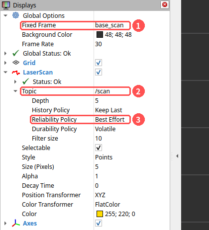
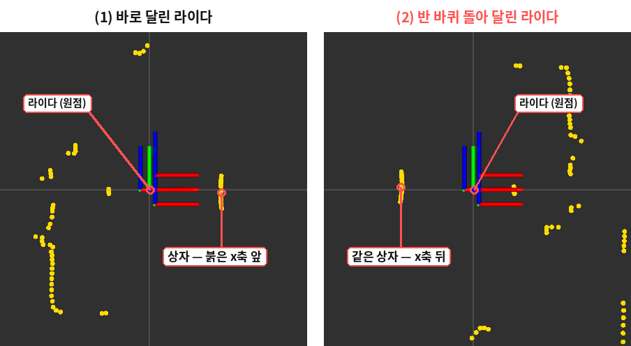
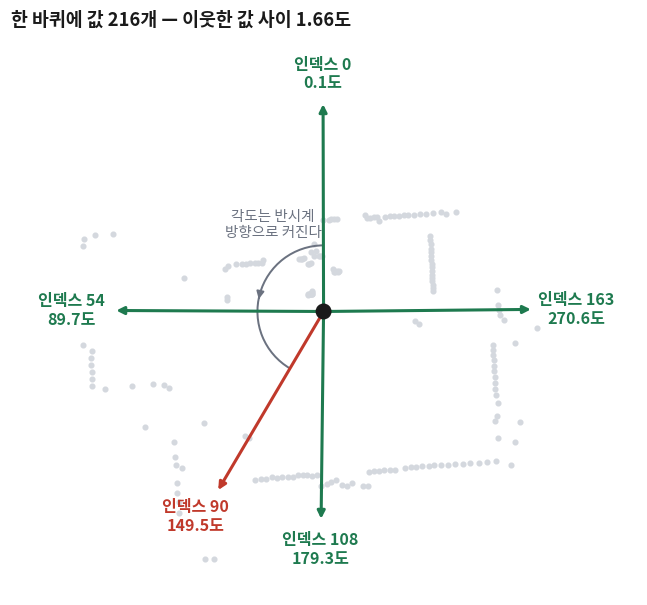
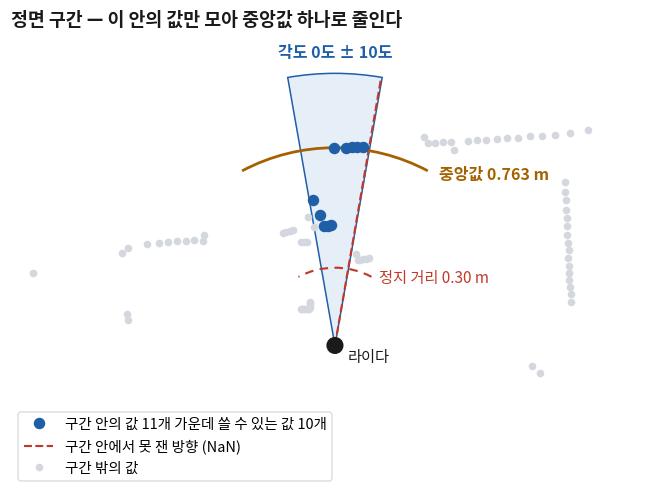
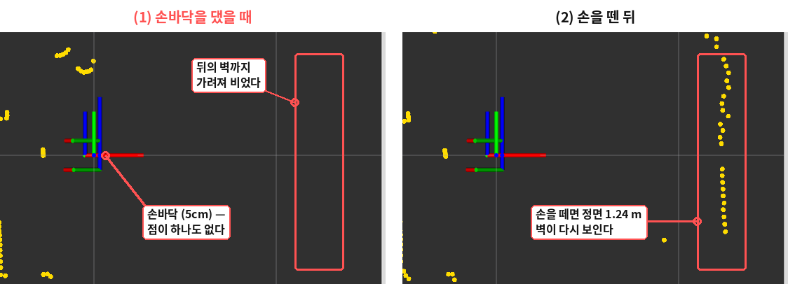
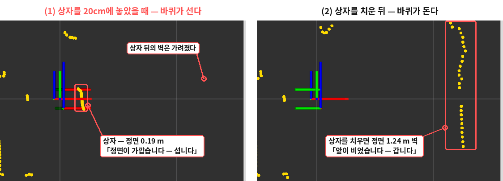

LaserScan 데이터 다루기
- 한 강의실에서 로봇 여러 대를 켜면 내 명령이 옆 로봇으로 가지 않게 하려면 무엇을 맞춰야 하나?
ranges의 몇 번째 값이 정면이고 몇 번째가 왼쪽인가? 번호로 외워도 되나?- 거리 값을 쓰기 전에 무엇을 걸러야 하고, 그 기준은 어디서 가져오나?
- 정면의 값 여러 개를 숫자 하나로 줄이려면 무엇을 쓰나? 평균은 왜 권하지 않나?
- 20~22회에서 쓰던
Twist를 그대로 보내면 로봇이 왜 안 움직이나?
23회에서는 라이다가 내놓는 값이 어떻게 생겼는지를 화면으로 봤다. 값은 성기고, 흔들리고, 가끔 비어 있었다. 오늘은 그 값을 여러분의 로봇에서 직접 받아 코드로 다룬다. 오늘부터 한 사람이 로봇 한 대를 맡고, 로봇에 달린 컴퓨터에 모니터와 키보드를 꽂아 그 위에서 바로 작업합니다.
만드는 것은 cone_drive라는 노드 하나다. 20~22회의 turtle_drive와 같은 모양(클래스 하나, 콜백, 타이머, 파라미터)으로 시작해서
27회까지 조금씩 자라 콘 사이를 달리는 노드가 된다. 거북이의 토픽(/turtle1/pose 같은 것)은 로봇에 없으므로 새 패키지로 시작한다.
오늘은 다섯 단계다 — 스캔을 받고(v1), 원하는 방향의 값을 찾고(v2), 쓸 수 없는 값을 거르고(v3), 숫자 하나로 줄이고(v4), 그 숫자로 바퀴를 세운다(v5).
이 다섯 단계는 에이전트에게 한 줄로 시킬 수 있는 일이기도 하다. 그런데 그렇게 받은 코드에는 흔히 ranges[0]과 ranges[90]이 들어 있고,
그 코드는 빌드도 되고 돌기도 하면서 틀린다. 무엇이 틀렸는지 알아보려면 오늘의 다섯 단계를 한 번은 직접 지나가 봐야 한다.
⑦절부터 로봇의 바퀴가 실제로 돈다. 로봇을 받침(책 몇 권이나 상자) 위에 올려 두 바퀴가 바닥에서 떠 있게 해 두고 시작합니다. 책상 위에서 바퀴가 바닥에 닿은 채로 돌리면 로봇이 책상 끝으로 갑니다. 바닥에 내려놓고 달리는 것은 27회 뒤의 일입니다.
① 로봇 켜기와 ROS_DOMAIN_ID 🔴 사람이 확인한다
17회에서 ROS 2의 노드는 「같은 망에 있으면 서로를 찾아낸다」고 했다. 편리한 성질인데, 한 강의실에서 로봇 서른 대가 같은 와이파이에 붙으면 문제가 된다.
내 노드가 보낸 /cmd_vel을 옆자리 로봇도 받는다. 토픽 이름이 같기 때문이다.
1-1 개념 — ROS_DOMAIN_ID
도메인 ID(domain ID)는 ROS 2 노드들을 서로 안 보이는 무리로 나누는 번호다. 번호가 같은 노드끼리만 서로를 찾는다.
번호는 환경변수 ROS_DOMAIN_ID로 정하고, 정하지 않으면 0이다. 0에서 101 사이의 정수를 쓰는 것이 무난하다.
그래서 로봇마다 다른 번호를 쓴다. 번호는 수업에서 한 사람에 하나씩 정해 줍니다. 자기 번호를 아래 빈칸에 적어 두세요.
내 ROS_DOMAIN_ID = ____
로봇 컴퓨터의 ~/.bashrc 끝에 이 줄이 있는지 확인하고, 숫자가 자기 번호와 다르면 고친다. 고친 뒤에는 터미널을 새로 연다(3회 — .bashrc는 터미널이 열릴 때 읽힌다).
$ grep -n ROS_DOMAIN_ID ~/.bashrc
120:export ROS_DOMAIN_ID=30 #TURTLEBOT3
$ echo $ROS_DOMAIN_ID
30
위 출력은 이 자료를 만든 로봇의 것이라 30이 찍혔다. 여러분의 화면에는 자기 번호가 나와야 한다.
같은 로봇에서 연 터미널들은 같은 .bashrc를 읽으므로 전부 같은 번호가 된다.
옆 로봇과 번호가 겹친 것일 수 있다. ros2 node list에 같은 이름의 노드가 두 번 보이거나, 내가 띄우지 않은 노드가 보이면 이것부터 의심한다.
두 사람이 echo $ROS_DOMAIN_ID를 쳐서 서로 견주어 보는 것이 가장 빠르다.
1-2 로봇 켜기 — robot.launch.py
로봇의 모터 보드와 라이다를 ROS 2 토픽으로 이어 주는 노드들을 한꺼번에 띄운다. 21회에서 배운 launch 파일이고, 터틀봇3 패키지(turtlebot3_bringup)에 들어 있다.
이것을 흔히 bringup(브링업)이라고 부른다.
⌨ 로봇 켜기 — 터미널 1에서. 이 터미널은 수업 내내 그대로 둔다
$ ros2 launch turtlebot3_bringup robot.launch.py끌 때는 이 터미널에서 Ctrl+C.
실제로 찍힌 줄 가운데 볼 것만 남기면 이렇다(대괄호 안의 시각은 줄였다).
[INFO] [robot_state_publisher-1]: process started with pid [53220]
[INFO] [ld08_driver-2]: process started with pid [53221]
[INFO] [turtlebot3_ros-3]: process started with pid [53222]
[turtlebot3_ros-3] [INFO] [DynamixelSDKWrapper]: Succeeded to open the port(/dev/ttyACM0)!
[ld08_driver-2] FOUND LDS-02
[ld08_driver-2] LDS-02 started successfully
[turtlebot3_ros-3] [INFO] [turtlebot3_node]: Start Calibration of Gyro
[turtlebot3_ros-3] [INFO] [turtlebot3_node]: Calibration End
[turtlebot3_ros-3] [INFO] [turtlebot3_node]: Run!
[turtlebot3_ros-3] [INFO] [diff_drive_controller]: Run!Succeeded to open the port — 모터 보드(OpenCR)와 이어졌다. FOUND LDS-02 — 라이다를 찾았다(23회 ④절. 라이다가 다르면 이 줄이 다르다).
마지막 Run! — 준비가 끝났다. Start Calibration of Gyro에서 Calibration End까지는 5초쯤 걸리는데, 그동안은 로봇을 건드리지 않는 것이 좋다.
로봇이 가만히 있다고 보고 자이로 센서의 영점을 잡는 중이기 때문이다.
1-3 토픽 확인
터미널 2를 열어 18회의 명령으로 무엇이 떴는지 본다.
$ ros2 topic list -t
/battery_state [sensor_msgs/msg/BatteryState]
/cmd_vel [geometry_msgs/msg/TwistStamped]
/imu [sensor_msgs/msg/Imu]
/joint_states [sensor_msgs/msg/JointState]
/magnetic_field [sensor_msgs/msg/MagneticField]
/odom [nav_msgs/msg/Odometry]
/parameter_events [rcl_interfaces/msg/ParameterEvent]
/robot_description [std_msgs/msg/String]
/rosout [rcl_interfaces/msg/Log]
/scan [sensor_msgs/msg/LaserScan]
/sensor_state [turtlebot3_msgs/msg/SensorState]
/tf [tf2_msgs/msg/TFMessage]
/tf_static [tf2_msgs/msg/TFMessage]무엇을 먼저 볼지: 오늘 쓰는 것은 두 줄이다.
| 토픽 | 타입 | 방향 | 오늘 어디서 |
|---|---|---|---|
/scan | sensor_msgs/msg/LaserScan | 로봇 → 내 노드 | ②~⑥절 |
/cmd_vel | geometry_msgs/msg/TwistStamped | 내 노드 → 로봇 | ⑦절 |
/cmd_vel의 타입이 거북이 때의 Twist가 아니라 TwistStamped인 것을 눈여겨 둔다. ⑦절에서 다시 본다.
/odom·/tf는 26회에서 쓴다. /scan이 어떤 QoS로 나오는지도 봐 둔다.
$ ros2 topic info -v /scan
Type: sensor_msgs/msg/LaserScan
Publisher count: 1
Node name: ld08_driver
Node namespace: /
Topic type: sensor_msgs/msg/LaserScan
Topic type hash: RIHS01_64c191398013af96509d518dac71d5164f9382553fce5c1f8cca5be7924bd828
Endpoint type: PUBLISHER
GID: 01.0f.33.de.c3.f3.c6.c6.00.00.00.00.00.00.14.03
QoS profile:
Reliability: BEST_EFFORT
History (Depth): UNKNOWN
Durability: VOLATILE
(… 아래 줄임 …)
Reliability: BEST_EFFORT — 22회에서 본 「센서는 best effort로 보낸다」가 실물에서도 그대로다.
그래서 받는 쪽은 rclcpp::SensorDataQoS()로 맞춘다. 받는 쪽을 reliable로 두면 이어지지 않는다는 것을 22회에서 확인했다.
1-4 rviz2로 스캔 보기
숫자로 받기 전에 눈으로 먼저 본다. 22회에서 쓴 rviz2를 로봇 컴퓨터에서 띄운다. 터미널 2에서 rviz2라고 치면 창이 뜨고, 왼쪽 Displays 칸에서 세 군데를 맞춘다.
⌨ rviz2에서 /scan 띄우기
$ rviz2- Global Options → Fixed Frame에
base_scan이라고 적는다(목록에서 골라도 된다). 처음 값map은 이 로봇에 없는 이름이라 그대로 두면 아무것도 안 보인다. - 왼쪽 아래 Add → By topic 탭 →
/scan아래의 LaserScan을 고른다. - 생긴 LaserScan → Topic → Reliability Policy를 Best Effort로 바꾼다. 라이다가 best effort로 보내기 때문이다(위
topic info -v). 점이 잘 안 보이면 Size (Pixels)를 5쯤으로 키운다. - 다시 Add → By display type 탭 → TF를 고른다. 로봇의 좌표계가 축으로 그려진다(1-5에서 쓴다).

오른쪽 화면에 방의 윤곽이 노란 점으로 그려진다(23회 ①절의 rviz2 그림). 마우스 휠로 가까이·멀리, 가운데 버튼을 누른 채 끌면 옮겨진다. 손을 라이다 둘레에 대 보면 그 방향의 점이 손 쪽으로 당겨져 오는 것이 바로 보인다. rviz2는 수업 내내 띄워 두고 곁눈으로 보면 좋다.
Fixed Frame 칸을 누르면 이름이 여러 개 뜬다. 이것들은 프레임, 곧 로봇의 부품마다 붙여 둔 좌표계의 이름이다. rviz2는 고른 프레임을 화면의 원점(붉은 x축 · 초록 y축이 만나는 곳)에 고정하고 나머지를 그 둘레에 그린다. 그러니 무엇을 고르느냐는 「어디에 서서 볼 것인가」를 고르는 일이다. bringup을 켠 터틀봇3 버거에서는 아래 이름들이 뜬다.
| 이름 | 원점이 어디인가 | Fixed Frame으로 고르면 |
|---|---|---|
base_scan | 라이다의 가운데 | 라이다가 본 그대로 그린다. 오늘은 이것을 쓴다 — 스캔의 각도 0이 화면의 붉은 x축 방향이다 |
base_link | 로봇 몸체의 기준점 (두 바퀴 축의 가운데) | 「로봇 몸체에서 본 스캔」. 라이다가 몸체 가운데보다 3.2cm 뒤에 있어 점들이 그만큼 밀려 보이지만, 눈으로는 거의 같다 |
base_footprint | base_link를 바닥에 내린 점 | 위에서 내려다보면 base_link와 같다 |
odom | bringup을 켠 순간 로봇이 있던 자리 | 바닥에 고정된 눈으로 본다. 로봇이 움직이면 벽은 제자리에 있고 로봇이 화면에서 움직인다 |
imu_link · caster_back_link | IMU 센서 · 뒤쪽 받침 바퀴 | 볼 수는 있지만 이것을 기준으로 볼 일은 거의 없다 |
wheel_left_link · wheel_right_link | 왼쪽 · 오른쪽 바퀴 | 바퀴가 돌면 기준도 같이 돌아서 화면 전체가 빙빙 돈다 |
map | 지도의 원점 | 지도를 만들거나 불러올 때 생긴다. 지금은 없으므로 화면이 빈다(처음 값이 이것이다) |
스캔만 볼 때는 base_scan이나 base_link 가운데 아무것이나 괜찮다. 목록에 이름이 안 뜨면 bringup이 안 떠 있거나 도메인이 다른 것이다(1-1).
프레임 사이가 어떻게 이어져 있는지, 왜 odom만 움직이는지는 26회 TF2에서 다룬다.
1-5 라이다 방향 확인 — 정면의 물체가 붉은 x축 앞에 보이나
점이 화면에 찍혔으면 라이다는 돌고 있다. 그런데 찍힌 방향이 맞는지는 아직 모른다. rviz2는 스캔의 각도 0을 붉은 x축 쪽에 그린다. 그 붉은 x축이 로봇의 앞이라는 약속이 지켜지려면, 라이다가 로봇에 맞는 방향으로 달려 있어야 한다. 조립할 때 라이다를 반 바퀴 돌려 달았다면 화면은 멀쩡해 보여도 앞뒤가 바뀌어 있다. 이것은 코드나 설정 파일을 읽어서는 알 수 없고, 물건을 놓아 봐야 안다.
⌨ 라이다 방향 확인
- 1-4의 화면을 그대로 둔다. Fixed Frame은
base_scan, LaserScan과 TF가 같이 떠 있다. - 상자나 두꺼운 책을 로봇 정면 30~40cm에 세운다. 로봇의 앞은 두 바퀴 사이에서 볼 캐스터(작은 공 바퀴)의 반대쪽이다.
- 상자를 앞뒤로 조금 움직여 보며, 움직이는 짧은 점 무리가 붉은 x축이 뻗은 쪽에 있는지 본다.

로봇의 부품마다 붙은 좌표계(1-4의 🆕 상자에 나온 프레임들)를 축 세 개로 그린다. 색은 언제나 같다 — 붉은 x는 앞, 초록 y는 왼쪽, 파란 z는 위.
그림의 원점에 축이 여러 겹 겹쳐 보이는 것은 base_scan·base_link·base_footprint가 몇 cm 안에 모여 있어서다.
이름이 왜 TF인지, 프레임 사이가 어떻게 이어지는지는 26회에서 다룬다.
상자가 그림 (2)처럼 붉은 x축의 반대편에 보이면 라이다가 반 바퀴 돌아 달린 것이다. 이때는 라이다를 고정한 나사를 풀고 라이다를 180도 돌려 다시 단다. 다시 단 뒤 위 세 단계를 한 번 더 해서 상자가 x축 앞에 오는지 봅니다. 혼자 돌려 달기 어려우면 조교나 교수에게 알려 주세요.
코드에서 각도를 180도 바꿔 읽는 방법도 있기는 하다. 그런데 이 과목의 코드는 25회의 좌표 변환, 26회의 TF2, 27회의 콘 주행까지 모두 「각도 0 = 로봇의 앞」을 전제로 짠다. 라이다를 바로 달아 두면 뒤 회차의 출력을 자료와 그대로 견줘 볼 수 있다.
② LaserScan 메시지의 필드 🔴 사람이 읽는다
17회에서 ros2 interface show sensor_msgs/msg/LaserScan으로 이 메시지의 정의를 읽었고, 23회에서 실제 값을 한 번 봤다.
코드를 쓰기 전에 어느 필드를 어디에 쓸지를 정리해 둔다. 긴 배열을 빼고 한 칸씩 받아 보려면 18회의 --field를 쓴다.
$ ros2 topic echo /scan --once --field angle_min
0.027939870953559875
---
$ ros2 topic echo /scan --once --field angle_increment
0.029072778299450874
---무엇을 먼저 볼지: 「이 로봇에서 받은 값」 열이다. 자기 로봇의 값과 견주어 본다 — 라이다가 다르면 많이 다르다.
| 필드 | 뜻 | 이 로봇(LDS-02)에서 받은 값 | 오늘 어디에 쓰나 |
|---|---|---|---|
header.frame_id | 어느 좌표계에서 잰 값인가 | base_scan | 26회 |
header.stamp | 언제 잰 값인가 | (받을 때마다 다르다) | — |
angle_min | 첫 값(인덱스 0)이 향한 각도. 단위 rad | 0.001 ~ 0.031 — 프레임마다 다르다 | ④절 |
angle_increment | 이웃한 두 값 사이의 각도. 단위 rad | 약 0.029 (1.67도) | ④절 |
angle_max | 마지막 값이 향한 각도 | 약 6.26 ~ 6.28 | — |
range_min · range_max | 믿을 수 있는 거리의 범위. 단위 m | 0.0 · 100.0 — 사양(0.16 · 8)과 다르다 | ⑤절 (쓰지 않는 까닭) |
ranges | 거리 값의 배열. 단위 m. C++에서는 std::vector<float> | 214 ~ 217개. 못 잰 자리는 NaN | ④~⑥절 |
intensities | 반사된 빛의 세기 | ranges와 같은 개수 | — |
scan_time · time_increment | 한 바퀴에 걸린 시간 · 값 하나 사이의 시간 | 약 0.094 s · 0.00044 s | — |
angle_min · angle_increment · ranges 셋이다.
ranges가 「무엇」이고 앞의 둘이 「어느 방향」이다. 둘 중 하나라도 빼고 ranges만 쓰면 방향을 알 수 없다.
③ /scan 구독 (v1) 🟡 맡기되 확인
먼저 스캔을 받아 「몇 개가, 어떤 각도 정보와 함께 오는지」만 찍는 노드를 만든다. 새로 배우는 문법은 없다. 20회의 구독자를 LaserScan으로 바꾼 것이다.
3-1 패키지 만들기
로봇 컴퓨터에도 16회와 같은 이름의 작업공간 ~/ros_ws가 있다. 그 안의 src/에는 터틀봇3 패키지들이 이미 들어 있고, 우리 패키지를 그 옆에 만든다(19회).
터미널 2에서 한다.
$ cd ~/ros_ws/src
$ ros2 pkg create cone_drive --build-type ament_cmake --dependencies rclcpp sensor_msgs
going to create a new package
package name: cone_drive
destination directory: /home/ritb07/ros_ws/src
package format: 3
version: 0.0.0
description: TODO: Package description
maintainer: ['ritb07 <ritb07@todo.todo>']
licenses: ['TODO: License declaration']
build type: ament_cmake
dependencies: ['rclcpp', 'sensor_msgs']
creating folder ./cone_drive
creating ./cone_drive/package.xml
creating source and include folder
creating folder ./cone_drive/src
creating folder ./cone_drive/include/cone_drive
creating ./cone_drive/CMakeLists.txt
(… 라이선스 안내 줄임 …)
/home/ritb07 자리에는 여러분 로봇의 사용자 이름이 찍힌다. --dependencies에 sensor_msgs를 같이 적었으므로
package.xml의 <depend>와 CMakeLists.txt의 find_package에 그 이름이 미리 들어가 있다.
3-2 1단계 (v1) — 스캔 한 프레임의 모양을 찍는다
~/ros_ws/src/cone_drive/src/cone_drive.cpp를 새로 만들어 아래 📄 상자의 소스를 붙여 넣고, CMakeLists.txt도 상자의 것으로 바꾼다.
로봇 컴퓨터에서는 우분투의 「텍스트 편집기」로 파일을 열어 고치면 된다. 볼 곳은 구독을 만드는 줄과 콜백이다.
// 라이다는 best effort 로 보낸다 — 받는 쪽도 센서 데이터용 QoS 로 맞춘다 (22회)
scan_sub_ = this->create_subscription<sensor_msgs::msg::LaserScan>(
"/scan", rclcpp::SensorDataQoS(),
[this](sensor_msgs::msg::LaserScan::ConstSharedPtr msg) { on_scan(msg); }); // /scan 이 올 때마다 불린다 (1초에 열 번쯤) — 요약은 1초에 한 번만 찍는다
void on_scan(sensor_msgs::msg::LaserScan::ConstSharedPtr msg)
{
RCLCPP_INFO_THROTTLE(this->get_logger(), *this->get_clock(), 1000,
"값 %zu개 · angle_min %.4f rad · angle_increment %.4f rad · range_min %.1f m · range_max %.1f m",
msg->ranges.size(), msg->angle_min, msg->angle_increment,
msg->range_min, msg->range_max);
}
스캔은 1초에 열 번쯤 온다. 올 때마다 찍으면 화면이 넘치므로 22회의 RCLCPP_INFO_THROTTLE로 1초에 한 번만 찍는다.
CMakeLists.txt에는 20회와 같은 석 줄(실행 파일 · 링크 · 설치)을 더한다.
# 24회 — 실행 파일 cone_drive. LaserScan(sensor_msgs)을 받는다
add_executable(cone_drive src/cone_drive.cpp)
target_link_libraries(cone_drive PRIVATE
rclcpp::rclcpp ${sensor_msgs_TARGETS})
# 만든 실행 파일을 ros2 run 이 찾는 자리에 설치한다
install(TARGETS cone_drive
DESTINATION lib/${PROJECT_NAME})전체 코드 — cone_drive/ (1단계 · v1)
빌드해서 돌리는 법: cd ~/ros_ws && colcon build --packages-select cone_drive && source install/setup.bash && ros2 run cone_drive cone_drive
// 24회 cone_drive — v1 (1단계: /scan 을 구독해 한 프레임의 모양을 1초에 한 번 찍는다)
#include <memory>
#include "rclcpp/rclcpp.hpp"
#include "sensor_msgs/msg/laser_scan.hpp"
class ConeDrive : public rclcpp::Node
{
public:
ConeDrive()
: Node("cone_drive")
{
// 라이다는 best effort 로 보낸다 — 받는 쪽도 센서 데이터용 QoS 로 맞춘다 (22회)
scan_sub_ = this->create_subscription<sensor_msgs::msg::LaserScan>(
"/scan", rclcpp::SensorDataQoS(),
[this](sensor_msgs::msg::LaserScan::ConstSharedPtr msg) { on_scan(msg); });
}
private:
// /scan 이 올 때마다 불린다 (1초에 열 번쯤) — 요약은 1초에 한 번만 찍는다
void on_scan(sensor_msgs::msg::LaserScan::ConstSharedPtr msg)
{
RCLCPP_INFO_THROTTLE(this->get_logger(), *this->get_clock(), 1000,
"값 %zu개 · angle_min %.4f rad · angle_increment %.4f rad · range_min %.1f m · range_max %.1f m",
msg->ranges.size(), msg->angle_min, msg->angle_increment,
msg->range_min, msg->range_max);
}
rclcpp::Subscription<sensor_msgs::msg::LaserScan>::SharedPtr scan_sub_;
};
int main(int argc, char ** argv)
{
rclcpp::init(argc, argv);
auto node = std::make_shared<ConeDrive>();
rclcpp::spin(node); // 구독 콜백은 이 안에서 불린다
rclcpp::shutdown();
return 0;
}cmake_minimum_required(VERSION 3.8)
project(cone_drive)
if(CMAKE_COMPILER_IS_GNUCXX OR CMAKE_CXX_COMPILER_ID MATCHES "Clang")
add_compile_options(-Wall -Wextra -Wpedantic)
endif()
# find dependencies
find_package(ament_cmake REQUIRED)
find_package(rclcpp REQUIRED)
find_package(sensor_msgs REQUIRED)
# 24회 — 실행 파일 cone_drive. LaserScan(sensor_msgs)을 받는다
add_executable(cone_drive src/cone_drive.cpp)
target_link_libraries(cone_drive PRIVATE
rclcpp::rclcpp ${sensor_msgs_TARGETS})
# 만든 실행 파일을 ros2 run 이 찾는 자리에 설치한다
install(TARGETS cone_drive
DESTINATION lib/${PROJECT_NAME})
if(BUILD_TESTING)
find_package(ament_lint_auto REQUIRED)
# the following line skips the linter which checks for copyrights
# comment the line when a copyright and license is added to all source files
set(ament_cmake_copyright_FOUND TRUE)
# the following line skips cpplint (only works in a git repo)
# comment the line when this package is in a git repo and when
# a copyright and license is added to all source files
set(ament_cmake_cpplint_FOUND TRUE)
ament_lint_auto_find_test_dependencies()
endif()
ament_package()<?xml version="1.0"?>
<?xml-model href="http://download.ros.org/schema/package_format3.xsd" schematypens="http://www.w3.org/2001/XMLSchema"?>
<package format="3">
<name>cone_drive</name>
<version>0.0.0</version>
<description>로봇공학 4부 실습 — 터틀봇3의 라이다로 콘을 찾아 따라가는 노드</description>
<maintainer email="student@example.com">Student Name</maintainer>
<license>MIT</license>
<buildtool_depend>ament_cmake</buildtool_depend>
<depend>rclcpp</depend>
<depend>sensor_msgs</depend>
<test_depend>ament_lint_auto</test_depend>
<test_depend>ament_lint_common</test_depend>
<export>
<build_type>ament_cmake</build_type>
</export>
</package>3-3 실제로 나온 출력
⌨ 빌드하고 돌리기 — 터미널 2에서. 오늘 단계마다 이 네 줄을 되풀이한다
$ cd ~/ros_ws
$ colcon build --packages-select cone_drive
$ source ~/ros_ws/install/setup.bash
$ ros2 run cone_drive cone_drive
--packages-select를 빼면 터틀봇3 패키지까지 전부 다시 빌드해서 1분쯤 걸린다. 셋째 줄 source는 패키지를 처음 만든 이번 한 번만 꼭 필요하고(19회), 그 뒤로는 쳐도 해가 없다.
끌 때는 Ctrl+C.
$ colcon build --packages-select cone_drive
Starting >>> cone_drive
Finished <<< cone_drive [11.0s]
Summary: 1 package finished [11.2s]
$ ros2 run cone_drive cone_drive
[INFO] [1794549597.541258927] [cone_drive]: 값 217개 · angle_min 0.0040 rad · angle_increment 0.0289 rad · range_min 0.0 m · range_max 100.0 m
[INFO] [1794549598.581115323] [cone_drive]: 값 217개 · angle_min 0.0133 rad · angle_increment 0.0289 rad · range_min 0.0 m · range_max 100.0 m
[INFO] [1794549599.631528298] [cone_drive]: 값 216개 · angle_min 0.0037 rad · angle_increment 0.0290 rad · range_min 0.0 m · range_max 100.0 m
[INFO] [1794549600.671516938] [cone_drive]: 값 216개 · angle_min 0.0093 rad · angle_increment 0.0290 rad · range_min 0.0 m · range_max 100.0 m
[INFO] [1794549601.711234305] [cone_drive]: 값 216개 · angle_min 0.0205 rad · angle_increment 0.0291 rad · range_min 0.0 m · range_max 100.0 m
[INFO] [1794549602.751367312] [cone_drive]: 값 215개 · angle_min 0.0215 rad · angle_increment 0.0291 rad · range_min 0.0 m · range_max 100.0 mangle_min이 0.004에서 0.021 사이로 바뀌었다. 23회 ⑤절에서 본 그대로다.
배열의 길이도, 첫 값의 방향도 프레임마다 다르다. 다음 절이 이것을 다룬다. 여러분의 로봇에 LDS-01이 달려 있다면 개수가 360으로 고정돼 나올 수도 있다 — 그 차이도 자기 화면에서 확인해 둔다.
④ 인덱스와 각도 (v2) 🔴 사람이 이해한다
로봇의 정면에 무엇이 있는지 알고 싶다. ranges의 어느 값을 보면 될까? 「한 바퀴가 360도이니 인덱스 0이 정면, 인덱스 90이 왼쪽」이라고 하고 싶어진다.
값이 정확히 360개이고 첫 값이 정확히 0도일 때만 맞는 말이다.
4-1 개념 — 인덱스를 각도로 바꾸는 식
메시지는 방향을 알아내는 데 필요한 것을 스스로 들고 다닌다. 인덱스 i의 값이 향한 각도 θ는 이렇게 구한다.
θ = angle_min + i × angle_increment (단위 rad)
도로 바꾸려면 θ(도) = θ(rad) × 180 ÷ π각도는 반시계 방향으로 커진다. 각도 0이 로봇의 앞이라면 90도는 왼쪽, 180도는 뒤, 270도는 오른쪽이다. 위에서 내려다봤을 때 왼쪽으로 도는 방향이 양수라는 약속이고, 25회에서 좌표와 함께 다시 정리한다.
거꾸로, 원하는 각도에 가장 가까운 인덱스는 식을 i에 대해 풀어 반올림하면 나온다.
i = 반올림( (θ − angle_min) ÷ angle_increment )4-2 숫자를 넣어 본다
어떤 상황인가: 값이 216개, angle_min 0.0024 rad, angle_increment 0.02896 rad(1.66도)인 프레임 하나를 받았다.
무엇을 보려는 것인가: 「인덱스 90」이 정말 왼쪽을 향하는가.
인덱스 90 의 각도 = 0.0024 + 90 × 0.02896 = 2.609 rad = 149.5도
90도에 가장 가까운 인덱스 = 반올림( (1.5708 − 0.0024) ÷ 0.02896 ) = 반올림(54.2) = 54
angle_min이 프레임마다 달라서 다음 프레임에서는 53이나 55가 될 수 있다.
그래서 인덱스를 숫자로 코드에 적지 않는다. 각도를 적고, 인덱스는 프레임마다 식으로 구한다.
그렇게 짠 코드는 값이 360개인 라이다에서도 고치지 않고 돈다.
4-3 2단계 (v2) — 0도와 90도의 값을 찍는다
식 두 개를 함수 두 개로 옮긴다.
// 인덱스 i 의 값이 향한 각도 (도) — θ = angle_min + i × angle_increment
double angle_deg(const sensor_msgs::msg::LaserScan & scan, std::size_t i) const
{
const double rad = scan.angle_min + i * scan.angle_increment;
return rad * 180.0 / M_PI;
}
// 각도 deg(도)에 가장 가까운 값의 인덱스 — 위 식을 i 에 대해 풀어 반올림한다
std::size_t index_near(const sensor_msgs::msg::LaserScan & scan, double deg) const
{
const double rad = deg * M_PI / 180.0;
const long n = static_cast<long>(scan.ranges.size());
long i = std::lround((rad - scan.angle_min) / scan.angle_increment) % n;
if (i < 0) { // 0 도보다 조금 앞이면 음수가 나온다 — 배열의 끝 쪽으로 돌린다
i += n;
}
return static_cast<std::size_t>(i);
} RCLCPP_INFO_THROTTLE(this->get_logger(), *this->get_clock(), 1000,
"값 %zu개 · angle_min %.4f rad · angle_increment %.4f rad · range_min %.1f m · range_max %.1f m",
msg->ranges.size(), msg->angle_min, msg->angle_increment,
msg->range_min, msg->range_max); const std::size_t front = index_near(*msg, 0.0); // 각도 0 도에 가장 가까운 값
const std::size_t left = index_near(*msg, 90.0); // 각도 90 도에 가장 가까운 값
RCLCPP_INFO_THROTTLE(this->get_logger(), *this->get_clock(), 1000,
"값 %zu개 · 0도: 인덱스 %zu (%.1f도) %.3f m · 90도: 인덱스 %zu (%.1f도) %.3f m",
msg->ranges.size(),
front, angle_deg(*msg, front), msg->ranges[front],
left, angle_deg(*msg, left), msg->ranges[left]);🆕 이 코드에서 처음 나오는 것
M_PI<cmath>에 들어 있는 원주율 π의 값(3.14159…)이다. 라디안과 도를 오갈 때 쓴다.std::lround(x)- 실수
x를 가장 가까운 정수로 반올림해long으로 돌려준다. 54.2는 54, 54.7은 55가 된다. % n과if (i < 0) i += n- 한 바퀴를 돌면 처음으로 돌아오는 것을 인덱스에 반영한다. 반올림한 결과가 배열 길이
n과 같거나 음수이면 배열 밖이므로 안으로 돌린다. C++의%는 왼쪽이 음수이면 결과도 음수라서 둘째 줄이 필요하다. const sensor_msgs::msg::LaserScan &- 12회의
const &다. 값 200여 개가 든 메시지를 복사하지 않고 읽기만 한다. 부르는 쪽에서*msg로 넘기는 것은msg가 포인터(ConstSharedPtr)이기 때문이다.
전체 코드 — cone_drive/src/cone_drive.cpp (2단계 · v2. CMakeLists.txt · package.xml 은 v1 그대로)
빌드해서 돌리는 법: cd ~/ros_ws && colcon build --packages-select cone_drive && ros2 run cone_drive cone_drive
// 24회 cone_drive — v2 (2단계: 인덱스를 각도로, 각도를 인덱스로 바꾼다 — 정면과 왼쪽의 값을 찍는다)
#include <cmath>
#include <memory>
#include "rclcpp/rclcpp.hpp"
#include "sensor_msgs/msg/laser_scan.hpp"
class ConeDrive : public rclcpp::Node
{
public:
ConeDrive()
: Node("cone_drive")
{
// 라이다는 best effort 로 보낸다 — 받는 쪽도 센서 데이터용 QoS 로 맞춘다 (22회)
scan_sub_ = this->create_subscription<sensor_msgs::msg::LaserScan>(
"/scan", rclcpp::SensorDataQoS(),
[this](sensor_msgs::msg::LaserScan::ConstSharedPtr msg) { on_scan(msg); });
}
private:
// /scan 이 올 때마다 불린다 (1초에 열 번쯤) — 요약은 1초에 한 번만 찍는다
void on_scan(sensor_msgs::msg::LaserScan::ConstSharedPtr msg)
{
const std::size_t front = index_near(*msg, 0.0); // 각도 0 도에 가장 가까운 값
const std::size_t left = index_near(*msg, 90.0); // 각도 90 도에 가장 가까운 값
RCLCPP_INFO_THROTTLE(this->get_logger(), *this->get_clock(), 1000,
"값 %zu개 · 0도: 인덱스 %zu (%.1f도) %.3f m · 90도: 인덱스 %zu (%.1f도) %.3f m",
msg->ranges.size(),
front, angle_deg(*msg, front), msg->ranges[front],
left, angle_deg(*msg, left), msg->ranges[left]);
}
// 인덱스 i 의 값이 향한 각도 (도) — θ = angle_min + i × angle_increment
double angle_deg(const sensor_msgs::msg::LaserScan & scan, std::size_t i) const
{
const double rad = scan.angle_min + i * scan.angle_increment;
return rad * 180.0 / M_PI;
}
// 각도 deg(도)에 가장 가까운 값의 인덱스 — 위 식을 i 에 대해 풀어 반올림한다
std::size_t index_near(const sensor_msgs::msg::LaserScan & scan, double deg) const
{
const double rad = deg * M_PI / 180.0;
const long n = static_cast<long>(scan.ranges.size());
long i = std::lround((rad - scan.angle_min) / scan.angle_increment) % n;
if (i < 0) { // 0 도보다 조금 앞이면 음수가 나온다 — 배열의 끝 쪽으로 돌린다
i += n;
}
return static_cast<std::size_t>(i);
}
rclcpp::Subscription<sensor_msgs::msg::LaserScan>::SharedPtr scan_sub_;
};
int main(int argc, char ** argv)
{
rclcpp::init(argc, argv);
auto node = std::make_shared<ConeDrive>();
rclcpp::spin(node); // 구독 콜백은 이 안에서 불린다
rclcpp::shutdown();
return 0;
}실제로 나온 출력이다.
$ ros2 run cone_drive cone_drive
[INFO] [1794549287.573566631] [cone_drive]: 값 216개 · 0도: 인덱스 0 (0.8도) 0.762 m · 90도: 인덱스 54 (90.8도) 3.239 m
[INFO] [1794549288.611855399] [cone_drive]: 값 216개 · 0도: 인덱스 0 (0.8도) 0.763 m · 90도: 인덱스 54 (90.6도) 3.229 m
[INFO] [1794549289.652258889] [cone_drive]: 값 216개 · 0도: 인덱스 0 (0.7도) 0.763 m · 90도: 인덱스 54 (90.6도) 3.220 m이 로봇은 각도 0 쪽으로 76cm, 90도 쪽으로 3.2m 떨어진 곳에 무언가가 있다. 「0도에 가장 가까운 값」이라고 해도 정확히 0도는 아니다(0.7~0.8도) — 값이 1.67도마다 하나씩 있기 때문이다. 그리고 23회에서 봤듯 먼 쪽(3.2m)의 값이 가까운 쪽보다 더 흔들린다.
메시지 정의는 「각도 0은 x축 방향(앞)」이라고 약속하지만, 그 약속은 라이다가 맞는 방향으로 달려 있을 때만 지켜진다. 에이전트에게 물어도 「보통은 앞」이라고만 답할 수 있다. 1-5에서 rviz2로 확인한 것을 여기서는 숫자로 다시 보는 셈이다.
이 자료는 라이다가 바로 달린 로봇(각도 0 = 앞)을 기준으로 쓰였다. 1-5에서 상자가 붉은 x축 뒤에 보였다면 이 출력에서도 정면의 상자가 「0도」가 아니라 「180도」에 찍힌다. 그때는 1-5의 ⚠️ 상자대로 라이다를 돌려 단 뒤에 이어 가면 된다.
⑤ 유효값 거르기 (v3) 🔴 사람이 기준을 정한다
정면의 값 하나(ranges[front])만 보고 판단해도 될까? 그 값이 하필 NaN이면, 또는 잡음으로 튄 값이면 판단이 통째로 틀린다.
그래서 정면 둘레의 값 여러 개를 모으고, 그중 쓸 수 없는 값을 먼저 버린다.
5-1 개념 — 유효한 값의 조건
거리 값 하나가 유효하다(valid)는 것은 아래를 모두 지킨다는 뜻이다.
| 조건 | 거르는 것 | C++에서 |
|---|---|---|
| 숫자다 | NaN(못 잰 방향) · inf(드라이버에 따라 「너무 멀다」) | std::isfinite(r) — 13회 |
| 라이다가 잴 수 있는 가장 가까운 거리 이상이다 | 0, 그리고 너무 가까워 믿을 수 없는 값 | r >= range_min_ |
| 라이다가 잴 수 있는 가장 먼 거리 이하다 | 범위 밖으로 튄 값 | r <= range_max_ |
둘째·셋째 줄의 기준을 메시지의 range_min·range_max에서 가져오고 싶지만, ②절 표에서 봤듯 이 로봇은 거기에 0.0과 100.0을 넣어 보낸다. 그것으로는 아무것도 걸러지지 않는다.
그래서 기준은 사양표(23회 ④절)에서 가져와 파라미터로 둔다. 라이다가 다른 로봇에서는 값만 바꿔 주면 된다.
| 파라미터 | LDS-01 | LDS-02 (기본값) | LDS-03 |
|---|---|---|---|
range_min | 0.12 | 0.16 | 0.05 |
range_max | 3.5 | 8.0 | 12.0 |
5-2 개념 — 각도 구간에 드는 값 고르기
「정면 둘레」는 각도 0도에서 양쪽으로 10도로 정한다. 인덱스로는 0번 앞뒤다 — 배열의 맨 앞 몇 개와 맨 뒤 몇 개가 한 구간이 된다. 350도와 10도는 20도 차이인데 숫자로 빼면 340이 나오는 것이 문제다. 두 각도의 차이를 −180 ~ 180도로 접어 주는 함수가 있으면 한 줄로 끝난다.
// 두 각도의 차이를 -180 ~ 180 도로 접는다 — 359 도와 1 도는 2 도 차이다
const double diff = std::remainder(angle_deg(scan, i) - center, 360.0);
if (std::abs(diff) > half) {
continue;
}5-3 3단계 (v3) — 정면 구간에서 쓸 수 있는 값만 모은다
생성자에 파라미터 셋을 선언하고(21회), 함수 둘을 더한다.
// 쓸 수 있는 거리인가 — NaN · inf 가 아니고 사양 범위 안에 있다
bool is_valid(float r) const
{
return std::isfinite(r) && r >= range_min_ && r <= range_max_;
}
// 각도가 center ± half (도) 안에 드는 값 가운데 쓸 수 있는 것만 모은다. total 에는 거르기 전의 개수를 적어 준다
std::vector<float> valid_ranges_in(const sensor_msgs::msg::LaserScan & scan,
double center, double half, std::size_t & total) const
{
std::vector<float> out;
total = 0;
for (std::size_t i = 0; i < scan.ranges.size(); ++i) {
// 두 각도의 차이를 -180 ~ 180 도로 접는다 — 359 도와 1 도는 2 도 차이다
const double diff = std::remainder(angle_deg(scan, i) - center, 360.0);
if (std::abs(diff) > half) {
continue;
}
++total;
if (is_valid(scan.ranges[i])) {
out.push_back(scan.ranges[i]);
}
}
return out;
} const std::size_t front = index_near(*msg, 0.0); // 각도 0 도에 가장 가까운 값
const std::size_t left = index_near(*msg, 90.0); // 각도 90 도에 가장 가까운 값
RCLCPP_INFO_THROTTLE(this->get_logger(), *this->get_clock(), 1000,
"값 %zu개 · 0도: 인덱스 %zu (%.1f도) %.3f m · 90도: 인덱스 %zu (%.1f도) %.3f m",
msg->ranges.size(),
front, angle_deg(*msg, front), msg->ranges[front],
left, angle_deg(*msg, left), msg->ranges[left]); std::size_t total = 0;
const std::vector<float> front = valid_ranges_in(*msg, 0.0, front_half_deg_, total);
RCLCPP_INFO_THROTTLE(this->get_logger(), *this->get_clock(), 1000,
"정면 ±%.0f도: 값 %zu개 중 쓸 수 있는 값 %zu개",
front_half_deg_, total, front.size());🆕 이 코드에서 처음 나오는 것
std::remainder(a, 360.0)a를 360으로 나눈 나머지를 −180 ~ 180 사이로 돌려준다(<cmath>). 350을 넣으면 −10, 370을 넣으면 10이 나온다.%나std::fmod와 달리 결과가 0을 가운데 두고 양쪽으로 갈리므로 「두 방향이 몇 도 벌어졌나」를 구할 때 맞다.std::size_t & totalconst가 없는 참조다. 함수가 부른 쪽의 변수에 값을 적어 준다. 돌려줄 것이 둘(걸러 낸 값들, 거르기 전의 개수)이라 하나는 반환값으로, 하나는 이렇게 내보냈다.index_near가 없어졌다- 구간 전체를 훑으므로 「가장 가까운 인덱스 하나」는 이제 쓰지 않는다. 쓰지 않는 함수는 지웠다.
전체 코드 — cone_drive/src/cone_drive.cpp (3단계 · v3)
빌드해서 돌리는 법: cd ~/ros_ws && colcon build --packages-select cone_drive && ros2 run cone_drive cone_drive
// 24회 cone_drive — v3 (3단계: 정면 구간의 값을 모으고, 못 잰 값과 사양 범위 밖의 값을 거른다)
#include <cmath>
#include <memory>
#include <vector>
#include "rclcpp/rclcpp.hpp"
#include "sensor_msgs/msg/laser_scan.hpp"
class ConeDrive : public rclcpp::Node
{
public:
ConeDrive()
: Node("cone_drive")
{
// 믿을 수 있는 거리 범위 — 메시지의 range_min · range_max 가 아니라 라이다 사양표에서 가져온다 (LDS-02 기준)
this->declare_parameter("range_min", 0.16);
this->declare_parameter("range_max", 8.0);
this->declare_parameter("front_half_deg", 10.0); // 정면 구간의 반폭 (도) — 0 도에서 양쪽으로 이만큼
range_min_ = this->get_parameter("range_min").as_double();
range_max_ = this->get_parameter("range_max").as_double();
front_half_deg_ = this->get_parameter("front_half_deg").as_double();
// 라이다는 best effort 로 보낸다 — 받는 쪽도 센서 데이터용 QoS 로 맞춘다 (22회)
scan_sub_ = this->create_subscription<sensor_msgs::msg::LaserScan>(
"/scan", rclcpp::SensorDataQoS(),
[this](sensor_msgs::msg::LaserScan::ConstSharedPtr msg) { on_scan(msg); });
RCLCPP_INFO(this->get_logger(), "range_min = %.2f m, range_max = %.2f m, front_half_deg = %.1f 도",
range_min_, range_max_, front_half_deg_);
}
private:
// /scan 이 올 때마다 불린다 (1초에 열 번쯤) — 요약은 1초에 한 번만 찍는다
void on_scan(sensor_msgs::msg::LaserScan::ConstSharedPtr msg)
{
std::size_t total = 0;
const std::vector<float> front = valid_ranges_in(*msg, 0.0, front_half_deg_, total);
RCLCPP_INFO_THROTTLE(this->get_logger(), *this->get_clock(), 1000,
"정면 ±%.0f도: 값 %zu개 중 쓸 수 있는 값 %zu개",
front_half_deg_, total, front.size());
}
// 인덱스 i 의 값이 향한 각도 (도) — θ = angle_min + i × angle_increment
double angle_deg(const sensor_msgs::msg::LaserScan & scan, std::size_t i) const
{
const double rad = scan.angle_min + i * scan.angle_increment;
return rad * 180.0 / M_PI;
}
// 쓸 수 있는 거리인가 — NaN · inf 가 아니고 사양 범위 안에 있다
bool is_valid(float r) const
{
return std::isfinite(r) && r >= range_min_ && r <= range_max_;
}
// 각도가 center ± half (도) 안에 드는 값 가운데 쓸 수 있는 것만 모은다. total 에는 거르기 전의 개수를 적어 준다
std::vector<float> valid_ranges_in(const sensor_msgs::msg::LaserScan & scan,
double center, double half, std::size_t & total) const
{
std::vector<float> out;
total = 0;
for (std::size_t i = 0; i < scan.ranges.size(); ++i) {
// 두 각도의 차이를 -180 ~ 180 도로 접는다 — 359 도와 1 도는 2 도 차이다
const double diff = std::remainder(angle_deg(scan, i) - center, 360.0);
if (std::abs(diff) > half) {
continue;
}
++total;
if (is_valid(scan.ranges[i])) {
out.push_back(scan.ranges[i]);
}
}
return out;
}
double range_min_ = 0.0; // 파라미터 range_min 에서 읽는다 (m)
double range_max_ = 0.0; // 파라미터 range_max 에서 읽는다 (m)
double front_half_deg_ = 0.0; // 파라미터 front_half_deg 에서 읽는다 (도)
rclcpp::Subscription<sensor_msgs::msg::LaserScan>::SharedPtr scan_sub_;
};
int main(int argc, char ** argv)
{
rclcpp::init(argc, argv);
auto node = std::make_shared<ConeDrive>();
rclcpp::spin(node); // 구독 콜백은 이 안에서 불린다
rclcpp::shutdown();
return 0;
}실제로 나온 출력이다.
$ ros2 run cone_drive cone_drive
[INFO] [1794549302.703097294] [cone_drive]: range_min = 0.16 m, range_max = 8.00 m, front_half_deg = 10.0 도
[INFO] [1794549305.563198390] [cone_drive]: 정면 ±10도: 값 11개 중 쓸 수 있는 값 10개
[INFO] [1794549306.603110842] [cone_drive]: 정면 ±10도: 값 12개 중 쓸 수 있는 값 11개
[INFO] [1794549307.642450877] [cone_drive]: 정면 ±10도: 값 12개 중 쓸 수 있는 값 10개
20도 폭에 값이 11~12개 든다(20 ÷ 1.67 ≒ 12). 그중 한두 개는 매번 걸러진다. 걸러진 것이 NaN인지 범위 밖인지는 이 출력으로는 알 수 없는데,
이 방에서는 전부 NaN이었다. 라이다가 LDS-01인 로봇은 --ros-args -p range_min:=0.12 -p range_max:=3.5를 붙여 켠다(21회).
⑥ 중앙값 (v4) 🔴 사람이 고른다
쓸 수 있는 값이 열 개쯤 모였다. 「정면이 가까운가」를 판단하려면 이것을 숫자 하나로 줄여야 한다. 무엇으로 줄일까?
6-1 개념 — 중앙값(median)
중앙값(median)은 값들을 크기순으로 세웠을 때 가운데에 오는 값이다. 평균과 달리 계산해서 만든 값이 아니라 실제로 잰 값 가운데 하나이고, 한두 개가 크게 튀어도 가운데 자리는 거의 움직이지 않는다.
6-2 숫자를 넣어 본다 — 실제 정면 구간
어떤 상황인가: 이 로봇의 정면 구간에서 받은 한 프레임의 값 11개다. 무엇을 보려는 것인가: 같은 값들을 세 가지 방법으로 줄이면 숫자가 얼마나 달라지나.
| 인덱스 | 211 | 212 | 213 | 214 | 215 | 0 | 1 | 2 | 3 | 4 | 5 |
|---|---|---|---|---|---|---|---|---|---|---|---|
| 각도 (도) | −9.8 | −8.1 | −6.5 | −4.8 | −3.2 | 0.1 | 1.8 | 3.5 | 5.1 | 6.8 | 8.4 |
| 거리 (m) | NaN | 0.774 | 0.771 | 0.768 | 0.765 | 0.763 | 0.464 | 0.463 | 0.463 | 0.505 | 0.567 |
NaN 을 빼고 크기순으로: 0.463 0.463 0.464 0.505 0.567 0.763 0.765 0.768 0.771 0.774 (10개)
중앙값 = 가운데 자리의 값 = 0.763 m
최솟값 = 맨 앞의 값 = 0.463 m
평균 = 전부 더해 10 으로 나눔 = 0.630 m
inf가 하나라도 섞이면 결과가 통째로 inf가 된다.
중앙값은 구간의 절반 넘게 차지한 쪽의 거리를 고른다. 이 그림에서 그것은 벽이었고, 가까운 물체는 구간의 절반에 못 미쳐서 뽑히지 않았다.
| 줄이는 방법 | 무엇을 고르나 | 언제 쓰나 |
|---|---|---|
| 중앙값 | 구간의 대부분을 차지한 것까지의 거리 | 기본. 튄 값 한두 개에 흔들리지 않는다. 벽·콘까지의 거리를 알고 싶을 때 |
| 최솟값 | 구간 안에서 가장 가까운 것까지의 거리 | 부딪히지 않는 것이 목적일 때. 대신 가깝게 튄 값 하나에도 반응한다 |
| 평균 | (실제로 없는 거리일 수 있다) | 이 과목에서는 권하지 않는다 |
오늘은 계획대로 중앙값으로 간다. 다만 위 그림이 보여 주듯, 「정면에 뭔가 있으면 선다」는 목적에는 최솟값이 더 맞을 수 있다. 어느 쪽이 맞는지는 무엇을 하려는가에 달려 있고, 그것을 정하는 것이 사람의 일이다. 📝 연습문제에서 최솟값으로 바꿔 본다.
6-3 4단계 (v4) — 정면 거리 하나
// 값들의 중앙값 — 크기순으로 세웠을 때 가운데 값. 세 개가 안 되면 「없다」를 돌려준다
std::optional<double> median(std::vector<float> values) const // 정렬하느라 순서를 바꾸므로 값으로 받는다 (사본)
{
if (values.size() < 3) {
return std::nullopt;
}
std::sort(values.begin(), values.end());
return values[values.size() / 2];
} RCLCPP_INFO_THROTTLE(this->get_logger(), *this->get_clock(), 1000,
"정면 ±%.0f도: 값 %zu개 중 쓸 수 있는 값 %zu개",
front_half_deg_, total, front.size()); const std::optional<double> distance = median(front);
if (distance) {
RCLCPP_INFO_THROTTLE(this->get_logger(), *this->get_clock(), 1000,
"정면 ±%.0f도: 값 %zu개 중 쓸 수 있는 값 %zu개 · 정면 거리 %.3f m",
front_half_deg_, total, front.size(), *distance);
} else {
RCLCPP_WARN_THROTTLE(this->get_logger(), *this->get_clock(), 1000,
"정면 ±%.0f도: 값 %zu개 중 쓸 수 있는 값 %zu개 · 정면을 못 봤습니다",
front_half_deg_, total, front.size());
}
세 가지를 본다. 하나, 정렬은 13회의 std::sort다. 직접 짜지 않는다. 둘, median은 인자를 const &가 아니라 값으로 받는다.
정렬은 순서를 바꾸는 일이라 원본을 건드리지 않으려면 사본이 필요하고, 값으로 받으면 그 사본이 생긴다(12회). 열 개 남짓이라 복사 비용은 문제가 안 된다.
셋, 쓸 수 있는 값이 세 개가 안 되면 숫자를 지어내지 않고 「없다」를 돌려준다. 14회의 std::optional이 이런 자리에 쓰인다 —
0이나 −1 같은 「약속한 숫자」로 실패를 알리면 그 숫자가 언젠가 진짜 거리로 읽힌다.
전체 코드 — cone_drive/src/cone_drive.cpp (4단계 · v4)
빌드해서 돌리는 법: cd ~/ros_ws && colcon build --packages-select cone_drive && ros2 run cone_drive cone_drive
// 24회 cone_drive — v4 (4단계: 걸러 낸 정면 값들을 중앙값 하나로 요약한다 — 값이 모자라면 「못 봤다」)
#include <algorithm>
#include <cmath>
#include <memory>
#include <optional>
#include <vector>
#include "rclcpp/rclcpp.hpp"
#include "sensor_msgs/msg/laser_scan.hpp"
class ConeDrive : public rclcpp::Node
{
public:
ConeDrive()
: Node("cone_drive")
{
// 믿을 수 있는 거리 범위 — 메시지의 range_min · range_max 가 아니라 라이다 사양표에서 가져온다 (LDS-02 기준)
this->declare_parameter("range_min", 0.16);
this->declare_parameter("range_max", 8.0);
this->declare_parameter("front_half_deg", 10.0); // 정면 구간의 반폭 (도) — 0 도에서 양쪽으로 이만큼
range_min_ = this->get_parameter("range_min").as_double();
range_max_ = this->get_parameter("range_max").as_double();
front_half_deg_ = this->get_parameter("front_half_deg").as_double();
// 라이다는 best effort 로 보낸다 — 받는 쪽도 센서 데이터용 QoS 로 맞춘다 (22회)
scan_sub_ = this->create_subscription<sensor_msgs::msg::LaserScan>(
"/scan", rclcpp::SensorDataQoS(),
[this](sensor_msgs::msg::LaserScan::ConstSharedPtr msg) { on_scan(msg); });
RCLCPP_INFO(this->get_logger(), "range_min = %.2f m, range_max = %.2f m, front_half_deg = %.1f 도",
range_min_, range_max_, front_half_deg_);
}
private:
// /scan 이 올 때마다 불린다 (1초에 열 번쯤) — 요약은 1초에 한 번만 찍는다
void on_scan(sensor_msgs::msg::LaserScan::ConstSharedPtr msg)
{
std::size_t total = 0;
const std::vector<float> front = valid_ranges_in(*msg, 0.0, front_half_deg_, total);
const std::optional<double> distance = median(front);
if (distance) {
RCLCPP_INFO_THROTTLE(this->get_logger(), *this->get_clock(), 1000,
"정면 ±%.0f도: 값 %zu개 중 쓸 수 있는 값 %zu개 · 정면 거리 %.3f m",
front_half_deg_, total, front.size(), *distance);
} else {
RCLCPP_WARN_THROTTLE(this->get_logger(), *this->get_clock(), 1000,
"정면 ±%.0f도: 값 %zu개 중 쓸 수 있는 값 %zu개 · 정면을 못 봤습니다",
front_half_deg_, total, front.size());
}
}
// 인덱스 i 의 값이 향한 각도 (도) — θ = angle_min + i × angle_increment
double angle_deg(const sensor_msgs::msg::LaserScan & scan, std::size_t i) const
{
const double rad = scan.angle_min + i * scan.angle_increment;
return rad * 180.0 / M_PI;
}
// 쓸 수 있는 거리인가 — NaN · inf 가 아니고 사양 범위 안에 있다
bool is_valid(float r) const
{
return std::isfinite(r) && r >= range_min_ && r <= range_max_;
}
// 각도가 center ± half (도) 안에 드는 값 가운데 쓸 수 있는 것만 모은다. total 에는 거르기 전의 개수를 적어 준다
std::vector<float> valid_ranges_in(const sensor_msgs::msg::LaserScan & scan,
double center, double half, std::size_t & total) const
{
std::vector<float> out;
total = 0;
for (std::size_t i = 0; i < scan.ranges.size(); ++i) {
// 두 각도의 차이를 -180 ~ 180 도로 접는다 — 359 도와 1 도는 2 도 차이다
const double diff = std::remainder(angle_deg(scan, i) - center, 360.0);
if (std::abs(diff) > half) {
continue;
}
++total;
if (is_valid(scan.ranges[i])) {
out.push_back(scan.ranges[i]);
}
}
return out;
}
// 값들의 중앙값 — 크기순으로 세웠을 때 가운데 값. 세 개가 안 되면 「없다」를 돌려준다
std::optional<double> median(std::vector<float> values) const // 정렬하느라 순서를 바꾸므로 값으로 받는다 (사본)
{
if (values.size() < 3) {
return std::nullopt;
}
std::sort(values.begin(), values.end());
return values[values.size() / 2];
}
double range_min_ = 0.0; // 파라미터 range_min 에서 읽는다 (m)
double range_max_ = 0.0; // 파라미터 range_max 에서 읽는다 (m)
double front_half_deg_ = 0.0; // 파라미터 front_half_deg 에서 읽는다 (도)
rclcpp::Subscription<sensor_msgs::msg::LaserScan>::SharedPtr scan_sub_;
};
int main(int argc, char ** argv)
{
rclcpp::init(argc, argv);
auto node = std::make_shared<ConeDrive>();
rclcpp::spin(node); // 구독 콜백은 이 안에서 불린다
rclcpp::shutdown();
return 0;
}실제로 나온 출력이다.
$ ros2 run cone_drive cone_drive
[INFO] [1794549320.796759662] [cone_drive]: range_min = 0.16 m, range_max = 8.00 m, front_half_deg = 10.0 도
[INFO] [1794549323.822216487] [cone_drive]: 정면 ±10도: 값 11개 중 쓸 수 있는 값 9개 · 정면 거리 0.766 m
[INFO] [1794549324.872174547] [cone_drive]: 정면 ±10도: 값 11개 중 쓸 수 있는 값 10개 · 정면 거리 0.765 m
[INFO] [1794549325.912239170] [cone_drive]: 정면 ±10도: 값 12개 중 쓸 수 있는 값 11개 · 정면 거리 0.762 m구간에 든 값의 개수와 쓸 수 있는 값의 개수는 매번 달라지는데 정면 거리는 0.762 ~ 0.766으로 4mm 안에서만 움직인다. 값 하나를 그대로 쓸 때보다 훨씬 차분하다.
⑦ /cmd_vel과 TwistStamped (v5) 🔴 사람이 확인한다
정면 거리가 나왔으니 그것으로 로봇을 움직여 본다. 규칙은 단순하게 둔다 — 앞이 비었으면 천천히 가고, 정면이 정지 거리보다 가까우면 선다.
20회에서 거북이에게 Twist를 보냈던 것과 같은 일인데, 실물 로봇에서는 두 가지가 달라진다.
7-1 개념 — TwistStamped
geometry_msgs/msg/TwistStamped는 Twist에 header(시각과 기준 좌표계)를 붙인 메시지다.
이름 끝의 Stamped가 「도장(시각)이 찍힌」이라는 뜻이고, 17회에서 본 PointStamped와 같은 짜임이다.
$ ros2 interface show geometry_msgs/msg/TwistStamped
# A twist with reference coordinate frame and timestamp
std_msgs/Header header
builtin_interfaces/Time stamp
int32 sec
uint32 nanosec
string frame_id
Twist twist
Vector3 linear
float64 x
float64 y
float64 z
Vector3 angular
float64 x
float64 y
float64 z
속도 여섯 칸은 그대로이고 한 단계 안쪽(twist)으로 들어갔다. 그래서 코드에서 cmd.linear.x가 cmd.twist.linear.x가 된다.
Jazzy용 터틀봇3는 /cmd_vel을 이 타입으로 받는다(①절의 topic list -t). 명령에 시각이 붙어 있으면 받는 쪽이 「너무 오래된 명령」을 가려낼 수 있다.
7-2 개념 — 타임아웃 정지(timeout stop)
거북이는 속도 명령을 받고 1초쯤 지나면 스스로 섰다. 실물 로봇은 그렇지 않다. 마지막으로 받은 속도를 다음 명령이 올 때까지 그대로 유지한다(7-5에서 확인한다).
그러니 「라이다 값이 끊겼는데 마지막 명령이 가라
였다」면 로봇은 앞을 못 보는 채로 계속 간다.
타임아웃 정지는 이것을 막는 장치다. 정해 둔 시간 안에 새 센서 값이 오지 않으면 멈추는 명령을 보낸다. 그러려면 판단을 스캔 콜백이 아니라 타이머에서 해야 한다 — 스캔이 안 오면 스캔 콜백은 불리지도 않기 때문이다.
스캔 콜백 (스캔이 올 때만 불린다) : 정면 거리를 구해 적어 둔다 + 「지금 받았다」를 적어 둔다
타이머 콜백 (0.1초마다 반드시 불린다): 마지막으로 받은 지 0.5초가 넘었나? → 넘었으면 선다
아니면 정면 거리로 「간다 · 선다」를 정한다7-3 5단계 (v5) — 정면 거리로 가고 선다
package.xml과 CMakeLists.txt에 geometry_msgs를 더한다(20회에서 한 것과 같다).
find_package(sensor_msgs REQUIRED)
# 24회 — 실행 파일 cone_drive. LaserScan(sensor_msgs)을 받는다
add_executable(cone_drive src/cone_drive.cpp)
target_link_libraries(cone_drive PRIVATE
rclcpp::rclcpp ${sensor_msgs_TARGETS})find_package(sensor_msgs REQUIRED)
find_package(geometry_msgs REQUIRED)
# 24회 — 실행 파일 cone_drive. LaserScan(sensor_msgs)을 받는다
# 24회 5단계 — TwistStamped(geometry_msgs)를 보낸다
add_executable(cone_drive src/cone_drive.cpp)
target_link_libraries(cone_drive PRIVATE
rclcpp::rclcpp ${sensor_msgs_TARGETS} ${geometry_msgs_TARGETS})스캔 콜백은 이제 찍지 않고 적어 두기만 한다.
// /scan 이 올 때마다 불린다 (1초에 열 번쯤) — 정면 거리를 구해 들고 있는다. 판단은 타이머가 한다
void on_scan(sensor_msgs::msg::LaserScan::ConstSharedPtr msg)
{
std::size_t total = 0;
const std::vector<float> front = valid_ranges_in(*msg, 0.0, front_half_deg_, total);
front_distance_ = median(front);
last_scan_time_ = this->now();
have_scan_ = true;
}판단과 발행은 타이머 콜백이 한다. 「간다」로 정해지는 길이 하나뿐이고 나머지는 전부 0이라는 것을 본다.
// 타이머가 0.1초마다 부른다 — 판단하고 명령을 보낸다
void on_timer()
{
double v = 0.0; // 보낼 직진 속도. 아래에서 「간다」로 정해질 때만 바뀐다
const char * why = "";
if (!have_scan_ || (this->now() - last_scan_time_).seconds() > scan_timeout_) {
why = "스캔이 오지 않습니다 — 섭니다"; // 한 번도 못 받았거나, 마지막으로 받은 지 0.5초가 넘었다
} else if (!front_distance_) {
why = "정면을 못 봤습니다 — 섭니다";
} else if (*front_distance_ < stop_distance_) {
why = "정면이 가깝습니다 — 섭니다";
} else {
v = speed_;
why = "앞이 비었습니다 — 갑니다";
}
geometry_msgs::msg::TwistStamped cmd; // 속도 여섯 칸이 전부 0 으로 시작한다
cmd.header.stamp = this->now(); // TwistStamped 에는 「언제 만든 명령인가」가 붙는다
cmd.twist.linear.x = v;
cmd_pub_->publish(cmd);
RCLCPP_INFO_THROTTLE(this->get_logger(), *this->get_clock(), 1000,
"정면 거리 %.3f m · 보낸 속도 %.2f m/s · %s",
front_distance_.value_or(std::nan("")), v, why);
}🆕 이 코드에서 처음 나오는 것
this->now()와rclcpp::Time- 노드의 시계로 잰 지금 시각이다. 두 시각을 빼면 그 사이의 길이가 나오고
.seconds()로 초 단위 실수를 얻는다. 22회에서 메시지의 나이를 잴 때 쓴 것과 같다. front_distance_.value_or(x)std::optional에 값이 있으면 그 값을, 없으면x를 돌려준다. 여기서는 로그에 찍을 숫자가 필요해서 「없으면 NaN」으로 했다. 판단에는 쓰지 않는다 — 판단은 위에서if (!front_distance_)로 이미 갈랐다.- 파라미터
speed·stop_distance - 기본값이 0.05 m/s와 0.30 m다. 터틀봇3 버거가 낼 수 있는 가장 빠른 직진 속도는 0.22 m/s이고, 오늘은 그 4분의 1에 못 미치는 속도로만 움직인다.
전체 코드 — cone_drive/ (5단계 · v5 완성본. 25회가 이 패키지에 이어 붙인다)
빌드해서 돌리는 법: cd ~/ros_ws && colcon build --packages-select cone_drive && ros2 run cone_drive cone_drive
// 24회 cone_drive — v5 (5단계: 정면 거리로 「간다 · 선다」를 정해 /cmd_vel 로 보낸다 — 스캔이 끊기면 선다)
#include <algorithm>
#include <chrono>
#include <cmath>
#include <memory>
#include <optional>
#include <vector>
#include "rclcpp/rclcpp.hpp"
#include "sensor_msgs/msg/laser_scan.hpp"
#include "geometry_msgs/msg/twist_stamped.hpp"
using namespace std::chrono_literals;
class ConeDrive : public rclcpp::Node
{
public:
ConeDrive()
: Node("cone_drive")
{
// 믿을 수 있는 거리 범위 — 메시지의 range_min · range_max 가 아니라 라이다 사양표에서 가져온다 (LDS-02 기준)
this->declare_parameter("range_min", 0.16);
this->declare_parameter("range_max", 8.0);
this->declare_parameter("front_half_deg", 10.0); // 정면 구간의 반폭 (도) — 0 도에서 양쪽으로 이만큼
range_min_ = this->get_parameter("range_min").as_double();
range_max_ = this->get_parameter("range_max").as_double();
front_half_deg_ = this->get_parameter("front_half_deg").as_double();
this->declare_parameter("speed", 0.05); // 앞이 비었을 때의 직진 속도 (m/s)
this->declare_parameter("stop_distance", 0.30); // 정면이 이보다 가까우면 선다 (m)
speed_ = this->get_parameter("speed").as_double();
stop_distance_ = this->get_parameter("stop_distance").as_double();
// 라이다는 best effort 로 보낸다 — 받는 쪽도 센서 데이터용 QoS 로 맞춘다 (22회)
scan_sub_ = this->create_subscription<sensor_msgs::msg::LaserScan>(
"/scan", rclcpp::SensorDataQoS(),
[this](sensor_msgs::msg::LaserScan::ConstSharedPtr msg) { on_scan(msg); });
// 터틀봇3(Jazzy)는 속도 명령을 Twist 가 아니라 TwistStamped 로 받는다
cmd_pub_ = this->create_publisher<geometry_msgs::msg::TwistStamped>("/cmd_vel", 10);
timer_ = this->create_wall_timer(100ms, [this]() { on_timer(); });
RCLCPP_INFO(this->get_logger(), "range_min = %.2f m, range_max = %.2f m, front_half_deg = %.1f 도",
range_min_, range_max_, front_half_deg_);
RCLCPP_INFO(this->get_logger(), "speed = %.2f m/s, stop_distance = %.2f m", speed_, stop_distance_);
}
private:
// /scan 이 올 때마다 불린다 (1초에 열 번쯤) — 정면 거리를 구해 들고 있는다. 판단은 타이머가 한다
void on_scan(sensor_msgs::msg::LaserScan::ConstSharedPtr msg)
{
std::size_t total = 0;
const std::vector<float> front = valid_ranges_in(*msg, 0.0, front_half_deg_, total);
front_distance_ = median(front);
last_scan_time_ = this->now();
have_scan_ = true;
}
// 타이머가 0.1초마다 부른다 — 판단하고 명령을 보낸다
void on_timer()
{
double v = 0.0; // 보낼 직진 속도. 아래에서 「간다」로 정해질 때만 바뀐다
const char * why = "";
if (!have_scan_ || (this->now() - last_scan_time_).seconds() > scan_timeout_) {
why = "스캔이 오지 않습니다 — 섭니다"; // 한 번도 못 받았거나, 마지막으로 받은 지 0.5초가 넘었다
} else if (!front_distance_) {
why = "정면을 못 봤습니다 — 섭니다";
} else if (*front_distance_ < stop_distance_) {
why = "정면이 가깝습니다 — 섭니다";
} else {
v = speed_;
why = "앞이 비었습니다 — 갑니다";
}
geometry_msgs::msg::TwistStamped cmd; // 속도 여섯 칸이 전부 0 으로 시작한다
cmd.header.stamp = this->now(); // TwistStamped 에는 「언제 만든 명령인가」가 붙는다
cmd.twist.linear.x = v;
cmd_pub_->publish(cmd);
RCLCPP_INFO_THROTTLE(this->get_logger(), *this->get_clock(), 1000,
"정면 거리 %.3f m · 보낸 속도 %.2f m/s · %s",
front_distance_.value_or(std::nan("")), v, why);
}
// 인덱스 i 의 값이 향한 각도 (도) — θ = angle_min + i × angle_increment
double angle_deg(const sensor_msgs::msg::LaserScan & scan, std::size_t i) const
{
const double rad = scan.angle_min + i * scan.angle_increment;
return rad * 180.0 / M_PI;
}
// 쓸 수 있는 거리인가 — NaN · inf 가 아니고 사양 범위 안에 있다
bool is_valid(float r) const
{
return std::isfinite(r) && r >= range_min_ && r <= range_max_;
}
// 각도가 center ± half (도) 안에 드는 값 가운데 쓸 수 있는 것만 모은다. total 에는 거르기 전의 개수를 적어 준다
std::vector<float> valid_ranges_in(const sensor_msgs::msg::LaserScan & scan,
double center, double half, std::size_t & total) const
{
std::vector<float> out;
total = 0;
for (std::size_t i = 0; i < scan.ranges.size(); ++i) {
// 두 각도의 차이를 -180 ~ 180 도로 접는다 — 359 도와 1 도는 2 도 차이다
const double diff = std::remainder(angle_deg(scan, i) - center, 360.0);
if (std::abs(diff) > half) {
continue;
}
++total;
if (is_valid(scan.ranges[i])) {
out.push_back(scan.ranges[i]);
}
}
return out;
}
// 값들의 중앙값 — 크기순으로 세웠을 때 가운데 값. 세 개가 안 되면 「없다」를 돌려준다
std::optional<double> median(std::vector<float> values) const // 정렬하느라 순서를 바꾸므로 값으로 받는다 (사본)
{
if (values.size() < 3) {
return std::nullopt;
}
std::sort(values.begin(), values.end());
return values[values.size() / 2];
}
double range_min_ = 0.0; // 파라미터 range_min 에서 읽는다 (m)
double range_max_ = 0.0; // 파라미터 range_max 에서 읽는다 (m)
double front_half_deg_ = 0.0; // 파라미터 front_half_deg 에서 읽는다 (도)
double speed_ = 0.0; // 파라미터 speed 에서 읽는다 (m/s)
double stop_distance_ = 0.0; // 파라미터 stop_distance 에서 읽는다 (m)
const double scan_timeout_ = 0.5; // 스캔이 이 시간(초) 넘게 안 오면 선다
bool have_scan_ = false; // 스캔을 한 번이라도 받았나
rclcpp::Time last_scan_time_; // 마지막으로 스캔을 받은 시각
std::optional<double> front_distance_; // 마지막 스캔의 정면 거리 (못 봤으면 비어 있다)
rclcpp::Subscription<sensor_msgs::msg::LaserScan>::SharedPtr scan_sub_;
rclcpp::Publisher<geometry_msgs::msg::TwistStamped>::SharedPtr cmd_pub_;
rclcpp::TimerBase::SharedPtr timer_;
};
int main(int argc, char ** argv)
{
rclcpp::init(argc, argv);
auto node = std::make_shared<ConeDrive>();
rclcpp::spin(node); // 타이머·구독 콜백은 이 안에서 불린다
rclcpp::shutdown();
return 0;
}cmake_minimum_required(VERSION 3.8)
project(cone_drive)
if(CMAKE_COMPILER_IS_GNUCXX OR CMAKE_CXX_COMPILER_ID MATCHES "Clang")
add_compile_options(-Wall -Wextra -Wpedantic)
endif()
# find dependencies
find_package(ament_cmake REQUIRED)
find_package(rclcpp REQUIRED)
find_package(sensor_msgs REQUIRED)
find_package(geometry_msgs REQUIRED)
# 24회 — 실행 파일 cone_drive. LaserScan(sensor_msgs)을 받는다
# 24회 5단계 — TwistStamped(geometry_msgs)를 보낸다
add_executable(cone_drive src/cone_drive.cpp)
target_link_libraries(cone_drive PRIVATE
rclcpp::rclcpp ${sensor_msgs_TARGETS} ${geometry_msgs_TARGETS})
# 만든 실행 파일을 ros2 run 이 찾는 자리에 설치한다
install(TARGETS cone_drive
DESTINATION lib/${PROJECT_NAME})
if(BUILD_TESTING)
find_package(ament_lint_auto REQUIRED)
# the following line skips the linter which checks for copyrights
# comment the line when a copyright and license is added to all source files
set(ament_cmake_copyright_FOUND TRUE)
# the following line skips cpplint (only works in a git repo)
# comment the line when this package is in a git repo and when
# a copyright and license is added to all source files
set(ament_cmake_cpplint_FOUND TRUE)
ament_lint_auto_find_test_dependencies()
endif()
ament_package()<?xml version="1.0"?>
<?xml-model href="http://download.ros.org/schema/package_format3.xsd" schematypens="http://www.w3.org/2001/XMLSchema"?>
<package format="3">
<name>cone_drive</name>
<version>0.0.0</version>
<description>로봇공학 4부 실습 — 터틀봇3의 라이다로 콘을 찾아 따라가는 노드</description>
<maintainer email="student@example.com">Student Name</maintainer>
<license>MIT</license>
<buildtool_depend>ament_cmake</buildtool_depend>
<depend>rclcpp</depend>
<depend>sensor_msgs</depend>
<depend>geometry_msgs</depend>
<test_depend>ament_lint_auto</test_depend>
<test_depend>ament_lint_common</test_depend>
<export>
<build_type>ament_cmake</build_type>
</export>
</package>7-4 실제로 나온 출력
바퀴가 떠 있는지 다시 본 뒤 돌린다. 이 로봇의 정면에는 76cm 앞에 벽이 있으므로 기본 정지 거리(0.30m)로는 「간다」가 나온다.
$ ros2 run cone_drive cone_drive
[INFO] [1794549339.865406076] [cone_drive]: range_min = 0.16 m, range_max = 8.00 m, front_half_deg = 10.0 도
[INFO] [1794549339.865530216] [cone_drive]: speed = 0.05 m/s, stop_distance = 0.30 m
[INFO] [1794549339.968062066] [cone_drive]: 정면 거리 nan m · 보낸 속도 0.00 m/s · 스캔이 오지 않습니다 — 섭니다
[INFO] [1794549341.065666854] [cone_drive]: 정면 거리 0.766 m · 보낸 속도 0.05 m/s · 앞이 비었습니다 — 갑니다
[INFO] [1794549342.065684171] [cone_drive]: 정면 거리 0.766 m · 보낸 속도 0.05 m/s · 앞이 비었습니다 — 갑니다
[INFO] [1794549343.165756659] [cone_drive]: 정면 거리 0.765 m · 보낸 속도 0.05 m/s · 앞이 비었습니다 — 갑니다첫 줄의 「스캔이 오지 않습니다」는 고장이 아니다. 노드가 뜬 직후 0.1초, 아직 첫 스캔을 받기 전에 타이머가 먼저 불린 것이다. 모를 때는 선다는 규칙이 시작하는 순간에도 지켜진 셈이다. 그동안 터미널 3에서 본 명령과 바퀴는 이렇다.
$ ros2 topic echo /cmd_vel --once
header:
stamp:
sec: 1794549346
nanosec: 465589237
frame_id: ''
twist:
linear:
x: 0.05
y: 0.0
z: 0.0
angular:
x: 0.0
y: 0.0
z: 0.0
---
$ ros2 topic echo /joint_states --once --field velocity
array('d', [0.05064750012411321, 0.05143886731355248])
---
/joint_states의 velocity는 왼쪽·오른쪽 바퀴가 지금 돌고 있는 빠르기다. 두 값이 0.05쯤으로 나왔다 — 명령이 바퀴까지 갔다.
이번에는 정지 거리를 정면 거리보다 크게 주고 켠다.
$ ros2 run cone_drive cone_drive --ros-args -p stop_distance:=2.0
[INFO] [1794549351.469903065] [cone_drive]: speed = 0.05 m/s, stop_distance = 2.00 m
[INFO] [1794549352.670028551] [cone_drive]: 정면 거리 0.765 m · 보낸 속도 0.00 m/s · 정면이 가깝습니다 — 섭니다
[INFO] [1794549353.670057737] [cone_drive]: 정면 거리 0.766 m · 보낸 속도 0.00 m/s · 정면이 가깝습니다 — 섭니다$ ros2 topic echo /joint_states --once --field velocity
array('d', [0.0, 0.0])
---7-5 노드를 꺼도 로봇은 서지 않는다
v5가 「간다」를 보내고 있을 때 Ctrl+C로 노드를 끄면 바퀴는 어떻게 될까? 끄기 전, 끈 뒤 1초 · 4초 · 9초에 바퀴의 빠르기를 받아 봤다.
달리는 중: array('d', [0.04985613293467394, 0.05143886731355248])
끈 뒤 1초쯤: array('d', [0.04985613293467394, 0.04985613293467394])
끈 뒤 4초쯤: array('d', [0.04985613293467394, 0.04985613293467394])
끈 뒤 9초쯤: array('d', [0.04985613293467394, 0.049064765745234676])
0 보낸 뒤: array('d', [0.0, 0.0])노드를 끈 지 9초가 지나도 바퀴는 같은 빠르기로 돌고 있었다. 로봇은 마지막으로 받은 명령을 계속 따른다. 노드가 꺼지면 「서라」를 보내 줄 것도 같이 없어진다. 바닥에 있었다면 9초 동안 45cm를 더 갔을 것이다. 그래서 노드를 끈 뒤에는 정지 명령을 직접 보낸다.
⌨ 로봇 세우기 — 0이 든 명령을 한 번 보낸다
$ ros2 topic pub --once /cmd_vel geometry_msgs/msg/TwistStamped '{}'
'{}'는 「모든 칸을 기본값(0)으로」라는 뜻이다. 이 줄을 한 번 쳐 두면 터미널에서 ↑로 다시 불러 쓸 수 있다.
터미널 하나를 이 명령 전용으로 비워 두는 것을 권합니다. 그래도 안 서면 로봇의 전원 스위치를 끈다.
그러면 7-2의 타임아웃 정지는 실제로 듣는가? v5가 달리고 있을 때 라이다 드라이버만 죽여 봤다(노드는 살아 있다).
달리는 중: array('d', [0.05064750012411321, 0.04985613293467394])
라이다 끊긴 뒤 2초: array('d', [0.0, 0.0])[INFO] [1794549530.728030761] [cone_drive]: 정면 거리 0.766 m · 보낸 속도 0.05 m/s · 앞이 비었습니다 — 갑니다
[INFO] [1794549531.731056977] [cone_drive]: 정면 거리 0.567 m · 보낸 속도 0.05 m/s · 앞이 비었습니다 — 갑니다
[INFO] [1794549532.828128513] [cone_drive]: 정면 거리 0.567 m · 보낸 속도 0.00 m/s · 스캔이 오지 않습니다 — 섭니다
[INFO] [1794549533.928035090] [cone_drive]: 정면 거리 0.567 m · 보낸 속도 0.00 m/s · 스캔이 오지 않습니다 — 섭니다7-6 Twist로 보내면
20~22회의 버릇대로, 또는 에이전트가 준 대로 geometry_msgs::msg::Twist로 발행하면 어떻게 될까? v5에서 타입만 Twist로 바꾼 판을 돌려 봤다.
빌드도 되고, 노드도 뜨고, 로그도 똑같이 찍힌다.
$ ros2 run cone_drive cone_drive
[INFO] [1794549380.247287358] [cone_drive]: 정면 거리 0.763 m · 보낸 속도 0.05 m/s · 앞이 비었습니다 — 갑니다
[INFO] [1794549381.247469114] [cone_drive]: 정면 거리 0.761 m · 보낸 속도 0.05 m/s · 앞이 비었습니다 — 갑니다그런데 바퀴는 돌지 않는다. 터미널 3에서 보면 까닭이 나온다.
$ ros2 topic echo /joint_states --once --field velocity
array('d', [0.0, 0.0])
---
$ ros2 topic info /cmd_vel
Type: ['geometry_msgs/msg/Twist', 'geometry_msgs/msg/TwistStamped']
Publisher count: 1
Subscription count: 1
Type: 줄에 타입이 둘 찍혔다. /cmd_vel이라는 이름 아래에 Twist를 보내는 발행자 하나와 TwistStamped를 받는 구독자 하나가 따로 있다는 뜻이다.
발행자 수도 구독자 수도 1이라 얼핏 이어진 것처럼 보이지만 둘은 서로를 상대하지 않는다. 오류도 경고도 없다.
「로그는 갑니다
인데 로봇이 안 간다」면 ros2 topic info /cmd_vel의 Type: 줄부터 본다.
🧪 실습 — 내 로봇의 정면 찾기 🔴 사람이 본다
🧪 이걸 해 보면 무엇을 알게 되나
내 로봇에서 각도 0이 정말 앞인지, 90도가 정말 왼쪽인지. 그리고 v5가 내 손을 보고 서는지. 앞의 둘은 코드를 아무리 읽어도, 에이전트에게 아무리 물어도 알 수 없고 물건을 놓아 봐야만 안다.
준비물
- 받침 위에 올려 바퀴를 띄운 로봇, bringup이 떠 있는 터미널 1
- 터미널 2(노드) · 터미널 3(정지 명령 전용)
- 상자나 두꺼운 책 한 권 — 밝은 색, 라이다 높이까지 오는 것. 그리고 30cm 자
절차
- (3분) rviz2를 1-4·1-5대로 띄워 둔다(Fixed Frame은
base_scan, LaserScan과 TF). 상자를 로봇 앞 30cm쯤에 세우고, 노란 점이 붉은 x축 앞에 일자로 모이는지 본다. 거리는 딱 30cm가 아니어도 된다 — 자로 잰 값을 적어 두고 견준다. - (5분) v2로 되돌려 빌드하고 켠다(④절의 📄 상자). 상자는 그대로 둔다. 「0도」의 거리가 자로 잰 값(라이다 가운데부터)쯤으로 바뀌는지 본다.
- (5분) 상자를 로봇 왼쪽 30cm로 옮긴다. 이번에는 「90도」의 거리가 0.3쯤으로 바뀌고 「0도」는 원래 값으로 돌아가는지 본다. rviz2에서는 점 무리가 초록 y축 쪽으로 옮겨 가야 한다.
- (5분) 상자를 치우고 손바닥을 라이다에 5cm까지 가져가 「0도」 값이 어떻게 찍히는지 본다. 23회의 「너무 가깝다」다.
- (5분) v5로 바꿔 빌드하고 켠다. 바퀴가 돌기 시작하면 상자를 앞 20cm에 놓는다. 바퀴가 서는지, 치우면 다시 도는지 본다.
- (3분) 바퀴가 도는 중에 터미널 2에서 Ctrl+C를 누른다. 바퀴가 계속 도는 것을 확인하고, 터미널 3에서 정지 명령을 보낸다.
- (5분)
ros2 run cone_drive cone_drive --ros-args -p stop_distance:=0.5로 켜서 4번을 다시 한다. 이번에는 상자를 몇 cm에서 놓아야 서는가?
이렇게 되면 성공이다
| 단계 | 보여야 하는 것 | 다르게 나오면 |
|---|---|---|
| 1 | rviz2에서 상자가 붉은 x축 위, 원점에서 0.3m쯤에 짧은 선으로 보인다 | 점 무리가 붉은 축의 반대편에 생기면 라이다가 반 바퀴 돌아 달린 것이다 — 1-5의 ⚠️ 상자대로 라이다를 돌려 단 뒤 다시 한다. 아무것도 안 보이면 1-4의 단계를 다시 본다 |
| 2 | 「0도」만 자로 잰 값 안팎으로 줄어든다 | 「180도」가 줄었다면 1번에서 상자가 x축 뒤에 있었을 것이다 — 라이다를 돌려 단다(1-5). 「90도」나 「270도」가 줄었다면 상자가 옆에 있는지, 라이다가 옆으로 돌아 달렸는지 본다 |
| 3 | 「90도」만 0.30 안팎으로 줄어든다 | 오른쪽에 놓아야 「90도」가 줄어든다면 좌우를 거꾸로 알고 있는 것이다 — 각도는 반시계로 커진다 |
| 4 | 손이 다가오는 동안 한 프레임쯤 0.16m 안팎이 찍히고, 5cm에 대고 있는 동안은 nan이 찍힌다 | — |
| 5 | 로그가 「정면이 가깝습니다 — 섭니다」로 바뀌고 바퀴가 선다. 상자를 치우면 다음 줄에서 「갑니다」로 돌아온다 | 안 서면 2번으로 돌아간다. 상자가 구간(±10도)의 절반을 넘게 가리고 있나? |
| 6 | 노드를 꺼도 바퀴가 돈다. 정지 명령을 보내면 선다 | — |


wheel_left_link · wheel_right_link)이 바퀴와 같이 돌기 때문이다.4번과 5번에서 실제로 나온 출력이다. 위는 v2에 손바닥을 댄 때(정면의 상자는 치웠다), 아래는 v5를 켠 채 상자를 20cm에 놓았다가 치운 때다.
[INFO] [1794607526.364935193] [cone_drive]: 값 215개 · 0도: 인덱스 0 (0.6도) 1.273 m · 90도: 인덱스 54 (90.6도) 0.603 m
[INFO] [1794607527.394825571] [cone_drive]: 값 215개 · 0도: 인덱스 214 (358.4도) 0.161 m · 90도: 인덱스 53 (89.7도) 0.568 m
[INFO] [1794607528.436046204] [cone_drive]: 값 214개 · 0도: 인덱스 213 (358.2도) nan m · 90도: 인덱스 53 (90.0도) 0.576 m
[INFO] [1794607529.476041850] [cone_drive]: 값 215개 · 0도: 인덱스 214 (358.5도) nan m · 90도: 인덱스 53 (89.7도) 0.567 m
…
[INFO] [1794607537.765123368] [cone_drive]: 값 216개 · 0도: 인덱스 0 (0.7도) 1.312 m · 90도: 인덱스 54 (90.7도) 0.566 m[INFO] [1794609155.045685212] [cone_drive]: 정면 거리 1.244 m · 보낸 속도 0.05 m/s · 앞이 비었습니다 — 갑니다
[INFO] [1794609156.045808900] [cone_drive]: 정면 거리 0.188 m · 보낸 속도 0.00 m/s · 정면이 가깝습니다 — 섭니다
[INFO] [1794609157.145709238] [cone_drive]: 정면 거리 0.189 m · 보낸 속도 0.00 m/s · 정면이 가깝습니다 — 섭니다
…
[INFO] [1794609161.345732061] [cone_drive]: 정면 거리 0.215 m · 보낸 속도 0.00 m/s · 정면이 가깝습니다 — 섭니다
[INFO] [1794609162.445661642] [cone_drive]: 정면 거리 1.243 m · 보낸 속도 0.05 m/s · 앞이 비었습니다 — 갑니다nan). 23회의 「너무 가깝다」다 — 라이다는 너무 가까운 것을 「가깝다」가 아니라 「못 쟀다」로 낸다.
⑤절의 v3부터는 이 nan이 걸러져 정면 거리에 들어가지 않는다. 정면 구간이 전부 비면 v5는 「정면을 못 봤습니다 — 섭니다」로 선다.
상자를 20cm에 놓았을 때는 0.188m로 제대로 잡혀 1초 안에 섰고, 치우자 다음 줄에서 다시 갔다.
로봇이 고장 났거나 집에서 복습할 때는 18회의 ros2 bag play로 녹화해 둔 스캔을 틀어 놓고 같은 노드를 돌릴 수 있다.
이 자료의 로봇에서 10초쯤 녹화한 기록 파일 bag_room(스캔 103개)을 따로 나눠 드립니다.
$ ros2 bag play bag_room --loop # 터미널 1 — 끝나면 처음부터 다시 튼다
$ ros2 run cone_drive cone_drive # 터미널 2
[INFO] [1794549967.496612098] [cone_drive]: 정면 거리 0.765 m · 보낸 속도 0.05 m/s · 앞이 비었습니다 — 갑니다기록 파일에는 물건을 놓을 수 없고 바퀴도 없다. 그래서 🧪 실습과 ⑦절의 바퀴 확인은 로봇이 있어야 한다.
📝 연습문제 — ranges[0]으로 짠 노드 고치기 🟡 맡기되 검사
아래는 「정면이 30cm보다 가까우면 서는 노드」를 한 줄로 시켰을 때 받기 쉬운 코드다(패키지 front_stop). 빌드되고 돌아간다.
바퀴를 띄운 로봇에서 실제로 돌린 출력도 그럴듯하다.
$ ros2 run front_stop front_stop
[INFO] [1794549902.201625296] [front_stop]: 정면 0.765 m · 왼쪽 1.693 m · 보낸 속도 0.05 m/s
[INFO] [1794549903.251223060] [front_stop]: 정면 0.762 m · 왼쪽 nan m · 보낸 속도 0.05 m/s
[INFO] [1794549904.291326214] [front_stop]: 정면 0.765 m · 왼쪽 nan m · 보낸 속도 0.05 m/s
그런데 「왼쪽」이 첫 줄에서는 1.693m였다가 다음 줄부터 nan이다. ④절에서 이 로봇의 왼쪽은 3.2m쯤이었다. 이 코드를 오늘 배운 것으로 고친다.
연습문제 — 오늘 배운 것이 없는 원본 (front_stop/)
빌드해서 돌리는 법: cd ~/ros_ws && colcon build --packages-select front_stop && source install/setup.bash && ros2 run front_stop front_stop
// 24회 연습문제 front_stop — 원본 (오늘 배운 것이 반영되지 않았다. 빌드되고 돌아간다)
#include <memory>
#include "rclcpp/rclcpp.hpp"
#include "sensor_msgs/msg/laser_scan.hpp"
#include "geometry_msgs/msg/twist_stamped.hpp"
class FrontStop : public rclcpp::Node
{
public:
FrontStop()
: Node("front_stop")
{
cmd_pub_ = this->create_publisher<geometry_msgs::msg::TwistStamped>("/cmd_vel", 10);
scan_sub_ = this->create_subscription<sensor_msgs::msg::LaserScan>(
"/scan", rclcpp::SensorDataQoS(),
[this](sensor_msgs::msg::LaserScan::ConstSharedPtr msg) { on_scan(msg); });
}
private:
// /scan 이 올 때마다 불린다 — 정면이 가까우면 서고 아니면 간다
void on_scan(sensor_msgs::msg::LaserScan::ConstSharedPtr msg)
{
const float front = msg->ranges[0]; // 정면
const float left = msg->ranges[90]; // 왼쪽
geometry_msgs::msg::TwistStamped cmd;
cmd.header.stamp = this->now();
if (front < 0.3) {
cmd.twist.linear.x = 0.0;
} else {
cmd.twist.linear.x = 0.05;
}
cmd_pub_->publish(cmd);
RCLCPP_INFO_THROTTLE(this->get_logger(), *this->get_clock(), 1000,
"정면 %.3f m · 왼쪽 %.3f m · 보낸 속도 %.2f m/s",
front, left, cmd.twist.linear.x);
}
rclcpp::Subscription<sensor_msgs::msg::LaserScan>::SharedPtr scan_sub_;
rclcpp::Publisher<geometry_msgs::msg::TwistStamped>::SharedPtr cmd_pub_;
};
int main(int argc, char ** argv)
{
rclcpp::init(argc, argv);
auto node = std::make_shared<FrontStop>();
rclcpp::spin(node);
rclcpp::shutdown();
return 0;
}cmake_minimum_required(VERSION 3.8)
project(front_stop)
if(CMAKE_COMPILER_IS_GNUCXX OR CMAKE_CXX_COMPILER_ID MATCHES "Clang")
add_compile_options(-Wall -Wextra -Wpedantic)
endif()
# find dependencies
find_package(ament_cmake REQUIRED)
find_package(rclcpp REQUIRED)
find_package(sensor_msgs REQUIRED)
find_package(geometry_msgs REQUIRED)
# 24회 연습문제 — 실행 파일 front_stop. LaserScan 을 받아 TwistStamped 를 보낸다
add_executable(front_stop src/front_stop.cpp)
target_link_libraries(front_stop PRIVATE
rclcpp::rclcpp ${sensor_msgs_TARGETS} ${geometry_msgs_TARGETS})
# 만든 실행 파일을 ros2 run 이 찾는 자리에 설치한다
install(TARGETS front_stop
DESTINATION lib/${PROJECT_NAME})
if(BUILD_TESTING)
find_package(ament_lint_auto REQUIRED)
# the following line skips the linter which checks for copyrights
# comment the line when a copyright and license is added to all source files
set(ament_cmake_copyright_FOUND TRUE)
# the following line skips cpplint (only works in a git repo)
# comment the line when this package is in a git repo and when
# a copyright and license is added to all source files
set(ament_cmake_cpplint_FOUND TRUE)
ament_lint_auto_find_test_dependencies()
endif()
ament_package()<?xml version="1.0"?>
<?xml-model href="http://download.ros.org/schema/package_format3.xsd" schematypens="http://www.w3.org/2001/XMLSchema"?>
<package format="3">
<name>front_stop</name>
<version>0.0.0</version>
<description>로봇공학 4부 실습 — 24회 연습문제 — 정면이 가까우면 서는 노드</description>
<maintainer email="student@example.com">Student Name</maintainer>
<license>MIT</license>
<buildtool_depend>ament_cmake</buildtool_depend>
<depend>rclcpp</depend>
<depend>sensor_msgs</depend>
<depend>geometry_msgs</depend>
<test_depend>ament_lint_auto</test_depend>
<test_depend>ament_lint_common</test_depend>
<export>
<build_type>ament_cmake</build_type>
</export>
</package>| 고칠 것 | 오늘 어디서 했나 | 확인하는 법 |
|---|---|---|
ranges[0] · ranges[90] — 인덱스를 숫자로 적었다 | ④절 | 「왼쪽」이 ④절의 「90도」와 같은 값을 내나 |
| 값 하나를 거르지 않고 비교한다 — 정면이 NaN이면? | ⑤절 | NaN일 때 「간다」가 나오지 않나 (nan < 0.3은 거짓이다) |
| 점 하나로 판단한다 | ⑥절 | 정면 거리가 프레임마다 덜 흔들리나 |
| 스캔 콜백 안에서 명령을 보낸다 — 스캔이 끊기면? | 7-2 | 달리는 중에 bringup을 Ctrl+C로 끄면 「섭니다」가 찍히나 |
| 0.3 · 0.05가 코드에 박혀 있다 | 21회 · 5-1 | -p stop_distance:=0.5가 먹나 |
| (더 해 보기) 중앙값 대신 최솟값으로 서게 한다 | 6-2 | ⑥절 그림의 46cm 물체에 반응하나 — -p stop_distance:=0.5로 켰을 때 서나 |
받은 코드는 위 표의 「확인하는 법」으로 하나씩 대 봅니다. 특히 넷째 줄은 바퀴가 떠 있는 로봇에서 직접 해 봐야 합니다 — 코드를 읽어서는 「그럴 것 같다」까지만 알 수 있습니다.
한 장 요약
무엇을 먼저 볼지: 오른쪽 「이것만 알면 된다」 열이다.
| 용어 | 코드·명령에서 이렇게 보인다 | 이것만 알면 된다 |
|---|---|---|
| 도메인 ID | export ROS_DOMAIN_ID=____ · echo $ROS_DOMAIN_ID | 번호가 같은 노드끼리만 보인다. 로봇마다 다른 번호 |
| bringup | ros2 launch turtlebot3_bringup robot.launch.py | FOUND LDS-…와 Run!이 찍히면 준비됐다 |
| 인덱스 → 각도 | angle_min + i * angle_increment | 인덱스를 숫자로 적지 않는다. 각도를 적고 인덱스는 식으로 구했다 |
| 각도의 방향 | 0도 앞 · 90도 왼쪽 · 270도 오른쪽 | 반시계가 양수. 내 로봇에서 맞는지는 물건을 놓아 확인했다 |
| 각도 차이 접기 | std::remainder(a - b, 360.0) | 350도와 10도는 20도 차이다 |
| 유효값 | std::isfinite(r) && r >= range_min_ && r <= range_max_ | 기준은 메시지가 아니라 사양표에서 가져와 파라미터로 뒀다 |
| 중앙값 | std::sort 뒤 values[size / 2] | 평균은 없는 거리를 만든다. 부딪히지 않는 것이 목적이면 최솟값 |
| 「없다」 돌려주기 | std::optional<double> · std::nullopt | 값이 모자라면 숫자를 지어내지 않는다 |
TwistStamped | cmd.header.stamp = this->now(); · cmd.twist.linear.x | Twist로 보내면 오류 없이 안 움직인다. topic info의 Type:을 봤다 |
| 타임아웃 정지 | 타이머에서 (now() - last_scan_time_).seconds() > 0.5 | 센서가 끊기면 선다. 판단은 타이머에서 했다 |
| 정지 명령 | ros2 topic pub --once /cmd_vel geometry_msgs/msg/TwistStamped '{}' | Ctrl+C는 로봇을 세우지 않는다 |
🤖 오늘 나온 프롬프트 모음 🟢 맡긴다
| 프롬프트 | 받은 뒤 사람이 확인하는 것 |
|---|---|
| 구간의 값 모으기 | 코드에 [0] · [90] · 360 같은 숫자가 남아 있지 않나. 0도 구간에서 값이 11~12개 모이나 |
TwistStamped로 바꾸기 | 켠 뒤 ros2 topic info /cmd_vel의 Type:이 하나인가. 바퀴가 도나 |
| 타임아웃 정지 | 달리는 중에 bringup을 끄고 로그와 바퀴를 본다. 읽어서 확인하지 않는다 |
✅ 오늘의 점검
조금 더 알아두면 시험 범위 아님
배열의 끝과 처음 사이 — 한 바퀴가 딱 맞아떨어지지 않는다
6-2의 표에서 인덱스 215(−3.2도)와 인덱스 0(0.1도) 사이는 3.3도다. 다른 이웃 사이(1.67도)의 두 배쯤이다. 라이다가 한 바퀴를 어디서 끊어 한 프레임으로 묶는지와 모터 빠르기의 흔들림 때문에, 마지막 값과 첫 값 사이에는 틈이 조금 남거나 겹친다. 각도 구간으로 값을 고르는 오늘의 방식은 이 틈에 영향을 받지 않는다 — 구간 안에 든 값이 하나 줄 뿐이다. 인덱스를 세어 「앞뒤로 여섯 개씩」 고르는 방식이라면 구간이 한쪽으로 쏠린다.
노드가 꺼질 때 스스로 0을 보내게 할 수는 없나
생각해 볼 만한 방법이다. 다만 Ctrl+C를 받은 뒤에는 ROS 통신이 이미 닫히는 중이라 그때 보낸 메시지가 나간다는 보장이 없고, 노드가 오류로 죽거나 컴퓨터가 멈춘 경우에는 그 코드가 아예 실행되지 않는다. 그래서 「꺼질 때 0을 보낸다」에 기대지 않는다. 사람이 정지 명령을 보낼 수 있게 해 두고, 로봇의 전원 스위치가 어디 있는지 알아 두는 것이 먼저다. 실제 제품 로봇은 이 일을 모터 쪽에서 한다 — 일정 시간 명령이 없으면 모터 제어기가 스스로 선다.
ROS_DOMAIN_ID를 한 터미널에서만 바꿔 보기
.bashrc를 고치지 않고 터미널 하나에서만 번호를 바꿀 수도 있다(3회의 export). 그 터미널에서 띄운 것은 다른 번호의 무리에 들어간다.
$ export ROS_DOMAIN_ID=77
$ ros2 topic list
/parameter_events
/rosout
bringup이 떠 있는데도 /scan이 보이지 않는다. 번호가 다르면 서로 없는 것과 같다는 것이 이렇게 확인된다.
위 🧪 실습 아래의 기록 파일 재생도, 로봇이 켜져 있는 채로 해 보고 싶으면 이렇게 다른 번호의 터미널 둘에서 하면 실물 스캔과 섞이지 않는다.
출처
ros2 interface show sensor_msgs/msg/LaserScan의 주석 — 각도는 z축 둘레로 반시계, 각도 0은 x축 앞- ROS 2 Jazzy 문서 「The ROS_DOMAIN_ID」 —
docs.ros.org/en/jazzy/Concepts/Intermediate/About-Domain-ID.html - 터틀봇3 패키지
turtlebot3_bringup/param/burger.yaml의enable_stamped_cmd_vel: true—/cmd_vel을TwistStamped로 받게 하는 설정 - ROBOTIS e-Manual, TurtleBot3 Features — 버거의 최대 직진 속도 0.22 m/s